<!doctype html>
<html lang="en">
<head>
  <meta charset="utf-8">
  <meta name="viewport" content="width=device-width, initial-scale=1">
  <title>arxiv digest — 2026-10-21</title>
  <style>
:root {
  --bg: #ffffff;
  --fg: #1f2328;
  --muted: #59636e;
  --border: #d0d7de;
  --card: #f6f8fa;
  --link: #0969da;
}
body {
  max-width: 980px;
  margin: 0 auto;
  padding: 2rem 1rem 5rem;
  font-family: -apple-system, BlinkMacSystemFont, "Segoe UI", Helvetica, Arial, sans-serif;
  line-height: 1.55;
  color: var(--fg);
  background: var(--bg);
}
a { color: var(--link); }
img { max-width: 100%; height: auto; }
pre, code { background: var(--card); border-radius: 6px; }
pre { padding: 1rem; overflow-x: auto; }
blockquote { border-left: 4px solid var(--border); padding-left: 1rem; color: var(--muted); }
details { margin: 0.6rem 0; }
summary { cursor: pointer; font-weight: 600; }
.paper-figures-scroll {
  display: flex;
  gap: 1rem;
  overflow-x: auto;
  overscroll-behavior-x: contain;
  padding: 0.75rem 0.25rem 1rem;
  margin: 1rem 0 1.25rem;
  border-top: 1px solid var(--border);
  border-bottom: 1px solid var(--border);
  scroll-snap-type: x proximity;
}
.paper-figure-card {
  flex: 0 0 min(260px, 72vw);
  scroll-snap-align: start;
  background: var(--card);
  border: 1px solid var(--border);
  border-radius: 12px;
  padding: 0.55rem;
}
.paper-figure-card img {
  display: block;
  width: 100%;
  max-height: 240px;
  object-fit: contain;
  background: white;
  border-radius: 8px;
}
.paper-figure-caption {
  display: block;
  margin-top: 0.5rem;
  color: var(--muted);
  font-size: 0.85rem;
}
.figure-strip-hint {
  color: var(--muted);
  font-size: 0.9rem;
  margin-bottom: -0.3rem;
}
</style>
  <script>
    window.MathJax = {
      tex: {
        inlineMath: [['$', '$'], ['\\(', '\\)']],
        displayMath: [['$$', '$$'], ['\\[', '\\]']],
        processEscapes: true,
        processEnvironments: true
      },
      options: {
        skipHtmlTags: ['script', 'noscript', 'style', 'textarea', 'pre', 'code'],
        ignoreHtmlClass: 'tex2jax_ignore',
        processHtmlClass: 'tex2jax_process'
      }
    };
  </script>
  <script id="MathJax-script" async
    src="https://cdn.jsdelivr.net/npm/mathjax@3/es5/tex-chtml.js"></script>
</head>
<body>
<header style="background-color: #333; color: white; padding: 15px; margin-bottom: 20px;">
  <h1 style="margin: 0; font-size: 24px;">
    <a href="https://ochelpan.github.io/arXiv_clean/" style="color: white; text-decoration: none;">Main</a>
  </h1>
</header>

<h1>Daily arXiv Report</h1>

<hr>
<p>
<a href="index.html">← Index</a>
 · <a href="papers_10.html">← Previous</a> · <a href="papers_12.html">Next →</a>
</p>
<hr>

<h2>Papers 201–220</h2>
<p><a id="paper-2610.26281"></a></p>
<h3 id="dispersion-of-three-dimensional-oscillons-a-standing-wave-perspective"><a href="http://arxiv.org/abs/2610.26281v1">Dispersion of three-dimensional oscillons: a standing-wave perspective</a></h3>
<p><strong>Authors:</strong> I. V. Barashenkov, R. De Sousa, N. V. Alexeeva, A. Dika, E. V. Zemlyanaya<br>
<strong>Type:</strong> theory · <strong>Category:</strong> other · <strong>PDF:</strong> <a href="https://arxiv.org/pdf/2610.26281v1">https://arxiv.org/pdf/2610.26281v1</a><br>
<strong>Analysis basis:</strong> full PDF text, analyzed in chunks
<strong>Topic relevance:</strong> <code>Keldysh / 2PI / non-Gaussian methods</code> <strong>3/5</strong> · <code>methods for driven-dissipative</code> <strong>2/5</strong> · <code>analog quantum simulation</code> <strong>1/5</strong></p>
<div class="figure-strip-hint">↔ Scroll figures horizontally</div>
<div class="paper-figures-scroll">
<figure class="paper-figure-card">
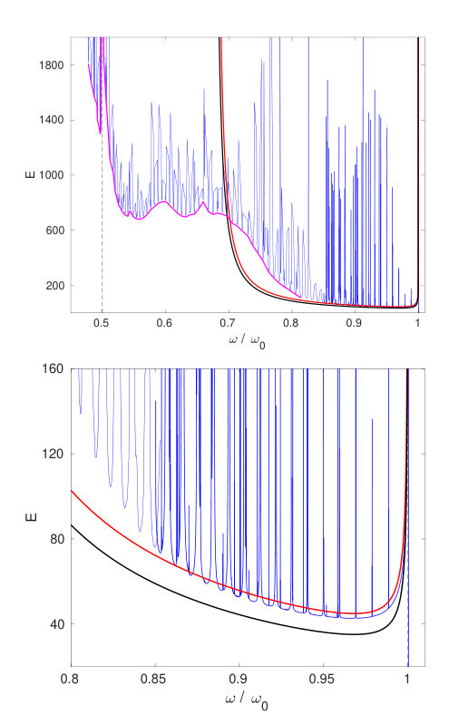
<figcaption class="paper-figure-caption"><b>Fig 1.</b> FIG. 1. (a): Dispersion of three-dimensional standing waves. Blue: energy of the numerical solution of the boundary-value problem (2). Pink: lower envelope of the energy minima, which is expected to lie close to the envelope of the fam- ily of dispersion curves obtained for varying R. Red: en- ergy of the fixed point of the variational equations, given by Eq. (19). The minimum of the variational energy is at ωmin = 0.96795 ω0. Black: energy of the variational fixed point with F = 0. (b): Blow-up of the segment containing the minimum of the envelope.</figcaption>
</figure>
<figure class="paper-figure-card">
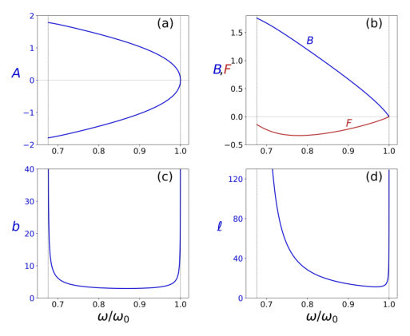
<figcaption class="paper-figure-caption"><b>Fig 2.</b> FIG. 2. Components of the fixed point of the variational system (15) and the adiabatic invariant as functions of ω. (a) amplitude of the first harmonic, A(ω); (b) amplitudes of the zeroth and second harmonics, B(ω) and F(ω); (c) spatial width of the trial function, b(ω); (d) adiabatic invariant, ℓ(ω). As the dimensionless frequency ω/ω0 approaches either 1 from below or 0.676 from above, the width b(ω) and hence the invariant ℓ(ω) grow without bound.</figcaption>
</figure>
<figure class="paper-figure-card">
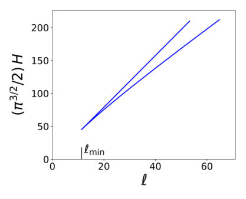
<figcaption class="paper-figure-caption"><b>Fig 3.</b> FIG. 3. Energy of the fixed point as a function of the invari- ant ℓ. The bottom (stable) and the top (unstable) branch correspond to ω &lt; ωmin and ωmin &lt; ω &lt; ω0, respectively. In this plot, the energy Uℓhas been multiplied by π3/2/2, as in (19), to be in line with Fig 1.</figcaption>
</figure>
<figure class="paper-figure-card">
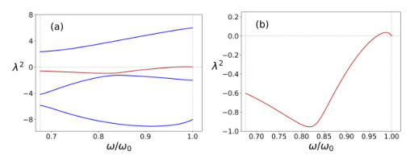
<figcaption class="paper-figure-caption"><b>Fig 4.</b> FIG. 4. Eigenvalues of the generalised eigenvalue problem (26). The eigenvalues shown by the blue curves in panel (a) have λ = O(1) and are therefore inconsistent with the as- sumption λ = O(ϵ). Panel (b) shows a magnified view of the branch with the smallest |λ|, depicted in red in panel (a). This branch crosses λ2 = 0 as ω is decreased through ωmin = 0.96795 ω0, changing from positive to negative λ2.</figcaption>
</figure>
<figure class="paper-figure-card">
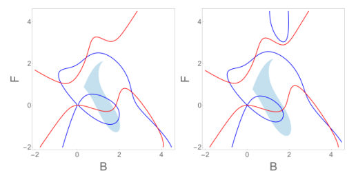
<figcaption class="paper-figure-caption"><b>Fig 5.</b> FIG. 5. Fixed points of the system (21) on the (B, F) plane. The red and blue curves are given by (A7) and (A9), respec- tively. The admissible region where the inequalities A2 &gt; 0 and b−2 &gt; 0 are satisfied simultaneously is tinted blue. (a) ω/ω0 = 0.65 (no fixed points in the admissible region); (b) ω/ω0 = 0.70 (a single fixed point).</figcaption>
</figure>
</div>

<p><strong>Summary.</strong> This paper studies the energy-frequency dispersion of three-dimensional oscillons by treating them as standing waves in a finite domain. The authors use a multiscale variational method to approximate the system's behavior, comparing their results against detailed numerical simulations. The work highlights the limitations of variational approximations when neglecting radiative energy loss mechanisms.</p>
<p><strong>Why it may be interesting.</strong> While the core physics is nonlinear field theory, the use of variational methods to approximate complex, non-linear wave dynamics and the comparison with numerical solutions is relevant to theoretical modeling techniques used in many-body systems.</p>
<details>
<summary>Detailed structure</summary>
<p><strong>Main problem.</strong> The paper investigates the dispersion relation of three-dimensional oscillons, modeling them as standing waves confined within a finite-radius ball.</p>
<p><strong>Main result.</strong> The variational analysis successfully approximates the energy-frequency relation, showing good agreement with numerical solutions near the continuous spectrum endpoint, but discrepancies arise due to neglected radiation wing growth at lower frequencies.</p>
<p><strong>Method.</strong> The authors employ a multiscale variational framework to derive an approximate description of the standing waves, complementing numerical solutions of the boundary value problem for the $\phi^4$ equation.</p>
<p><strong>Model / system.</strong> The system is modeled by the $\phi^4$ equation, $\Phi_{tt} - \Delta\Phi - \Phi + \Phi^3 = 0$, focusing on spherically symmetric standing wave solutions within a finite radius $R$.</p>
<p><strong>Key observables.</strong> The energy $E[\phi]$ and the dispersion curve $E(\omega)$ are the primary observables, with the frequency $\omega$ relative to $\omega_0$ being the key parameter.</p>
<p><strong>Important parameters / regimes.</strong> The radius $R$, the frequency $\omega$, and the characteristic frequency $\omega_0$ are important parameters. The analysis is sensitive to the ratio $\omega/\omega_0$.</p>
<p><strong>Assumptions / limitations.</strong> The variational ansatz neglects the growth of the radiation wing, which is the primary source of discrepancy when $\omega$ drops below $0.85 \omega_0$.</p>
<p><strong>Figures summary.</strong> Figures illustrate the numerical and variational dispersion curves, showing the energy minimum ($\omega_{\min}$) and the blow-up behavior of the energy envelope as $\omega \to \omega_0$.</p>
<p><strong>Paper structure.</strong> The paper progresses from defining the physical model and the standing wave boundary value problem to applying a multiscale variational ansatz. It then compares the resulting energy-frequency relation with numerical results, detailing the mathematical derivations and analyzing the limitations of the variational approximation.</p>
</details>
<details>
<summary>Abstract</summary>
<p>A spherically symmetric standing wave confined within a finite-radius ball, with weak radiative exchange between its core and boundary, provides a model for an intermediate stage in the adiabatic evolution of the $φ^4$ oscillon. We employ a multiscale variational framework to derive an approximate description of these standing waves and their energy-frequency relation. The resulting dispersion curve is compared with that obtained from numerical solutions of the boundary value problem for the $φ^4$ equation on a two dimensional (time and radius) domain. The agreement between the numerical and variational results is excellent near the endpoint of the continuous spectrum but deteriorates as $ω$ is reduced below $0.85 ω_0$. We attribute this discrepancy to the growth of the radiation wing, which is neglected in the variational ansatz.</p>
</details>
<p><sub><a href="#top">↑ back to top</a></sub></p>

<p><a id="paper-2610.24391"></a></p>
<h3 id="quantum-state-tomography-through-multi-frequency-josephson-effect"><a href="http://arxiv.org/abs/2610.24391v1">Quantum state tomography through multi-frequency Josephson effect</a></h3>
<p><strong>Authors:</strong> Xian-Peng Zhang, Ting-Rui Hu, Zhen-Biao Yang, Rubén Seoane Souto, Yugui Yao<br>
<strong>Type:</strong> theory · <strong>Category:</strong> quantum information and computing · <strong>PDF:</strong> <a href="https://arxiv.org/pdf/2610.24391v1">https://arxiv.org/pdf/2610.24391v1</a><br>
<strong>Analysis basis:</strong> full PDF text, analyzed in chunks
<strong>Topic relevance:</strong> <code>quantum measurements</code> <strong>3/5</strong> · <code>QC/QI experiment</code> <strong>2/5</strong></p>
<div class="figure-strip-hint">↔ Scroll figures horizontally</div>
<div class="paper-figures-scroll">
<figure class="paper-figure-card">
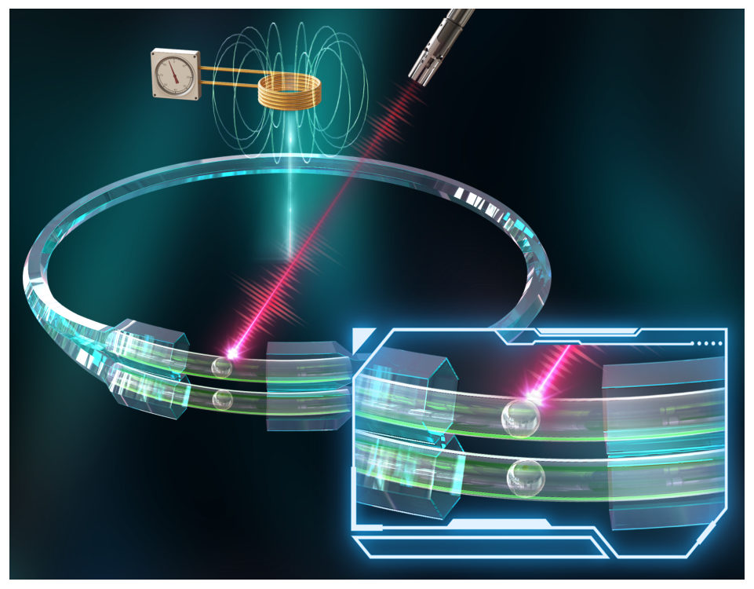
<figcaption class="paper-figure-caption"><b>Fig 1.</b> Figure 1: Sketch of double-quantum-dot Josephson junction.18–20 Two quantum dots are gate-formed in the middle of two parallel semiconductor nanowires and are tunnel-coupled to left and right proximitized semiconductor-superconductor leads.</figcaption>
</figure>
<figure class="paper-figure-card">
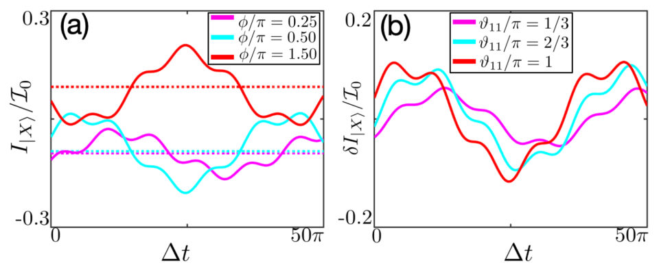
<figcaption class="paper-figure-caption"><b>Fig 2.</b> Figure 2: The time evolution of (a) total supercurrent and (b) DIS, where we study a superposition of four many-body eigenstates |X⟩= p00|00⟩+ p01|00⟩+ p10|10⟩+ p11|11⟩ with pr = |pr|eiϑr. The dashed lines in panel (a) correspond to the static supercurrent (8). The phase of probability amplitude influences the oscillation amplitude of the DIS (9), as observed in panel (b). Other parameters are the same as Fig. 1 in SM.</figcaption>
</figure>
</div>

<p><strong>Summary.</strong> This theoretical paper develops a method to measure quantum entanglement in superconducting qubits by analyzing the dynamic interference supercurrent (DIS). The DIS arises from quantum interference between different many-body eigenstates and is shown to be sensitive to the relative phases of the quantum state. This technique offers a pathway to perform quantum state tomography using only electrical measurements on superconducting nanodevices.</p>
<p><strong>Why it may be interesting.</strong> This work directly links a fundamental, macroscopic quantum phenomenon (supercurrent) to the abstract concepts of quantum state tomography and entanglement measurement, providing a concrete, measurable signature for quantum information processing in solid-state devices.</p>
<details>
<summary>Detailed structure</summary>
<p><strong>Main problem.</strong> To derive and utilize the dynamic interference supercurrent (DIS) as a novel, electrical method for performing quantum state tomography and measuring entanglement in superconducting qubits.</p>
<p><strong>Main result.</strong> The macroscopic supercurrent inherently contains information about the relative phases of the many-body eigenstates, allowing entanglement to be measured electrically.</p>
<p><strong>Method.</strong> The supercurrent is analytically derived by decomposing it into static and dynamic (interference) components, utilizing the $\phi$-space Berry connection.</p>
<p><strong>Model / system.</strong> The system involves superconducting nanodevices, specifically Andreev spin qubits coupled via a Josephson junction, modeled using a microscopic wave-function approach beyond Ginzburg-Landau theory.</p>
<p><strong>Key observables.</strong> Dynamic Interference Supercurrent ($\delta I$), which oscillates with frequencies related to energy differences between states; the supercurrent itself serves as the diagnostic for entanglement.</p>
<p><strong>Important parameters / regimes.</strong> Superconducting phase ($\phi$), energy differences between many-body eigenstates ($\omega_1, \omega_2$), and the probability amplitudes ($p_r$) and relative phases ($\vartheta_r$) of the superposition state.</p>
<p><strong>Assumptions / limitations.</strong> The analysis assumes open boundary conditions and that the population of Andreev bound states does not change with time; it also notes limitations regarding the measurement of maximally entangled Bell states.</p>
<p><strong>Figures summary.</strong> Figures illustrate the time evolution of both the total supercurrent and the DIS for a superposition of multiple eigenstates, and one figure sketches the SQUID setup for detection.</p>
<p><strong>Paper structure.</strong> The paper progresses from establishing the need for a microscopic wave-function approach over standard methods, deriving the total supercurrent decomposition ($ar{I} + \delta I$), and finally demonstrating how the interference term ($\delta I$) allows for the extraction of relative phases necessary for quantum state tomography.</p>
</details>
<details>
<summary>Abstract</summary>
<p>Macroscopic quantum effects emerge when the coherent behavior of countless microscopic quantum states manifests collectively at a visible scale, as exemplified by the supercurrent carried by innumerable finite-momentum Cooper pairs. By rigorously analyzing the time evolution of superconducting nanodevices including finite-momentum superconductors and quantum-dot Josephson junctions, we analytically derive the ubiquitous macroscopic supercurrent that originates from quantum interference between distinct many-body eigenstates, which we term as the dynamic interference supercurrent. The dynamic interference supercurrent in a system of two Andreev spin qubits exhibits multi-frequency Josephson effect in the absence of external voltage and is governed by the response of the many-body eigenfunctions ($\vert r\rangle$) to variations in the superconducting phase $φ$, determined by the $φ$-space Berry connection $C_{rr'}=\langle r|\partial_φ|r'\rangle$. The macroscopic dynamic interference supercurrent, an inherent property of the superposition state itself, enables an advanced quantum entanglement measurement of the Andreev spin qubits. These findings open new avenues for investigating superconducting nanodevice properties from a wave-function level, with substantial implications for advancing quantum science and technology in solid-state superconducting devices, such as quantum computer, communication, memory, and sensor.</p>
</details>
<p><sub><a href="#top">↑ back to top</a></sub></p>

<p><a id="paper-2610.25478"></a></p>
<h3 id="thermal-responses-of-spin-density-and-spin-current-induced-by-bogoliubov-fermi-surfaces-in-proximity-superconductors"><a href="http://arxiv.org/abs/2610.25478v1">Thermal Responses of Spin Density and Spin Current Induced by Bogoliubov Fermi Surfaces in Proximity Superconductors</a></h3>
<p><strong>Authors:</strong> Yingwen Zhang, Cong Xiao, Xiao Li<br>
<strong>Type:</strong> theory · <strong>Category:</strong> other · <strong>PDF:</strong> <a href="https://arxiv.org/pdf/2610.25478v1">https://arxiv.org/pdf/2610.25478v1</a><br>
<strong>Analysis basis:</strong> full PDF text, analyzed in chunks
<strong>Topic relevance:</strong> <code>Keldysh / 2PI / non-Gaussian methods</code> <strong>3/5</strong> · <code>methods for driven-dissipative</code> <strong>1/5</strong></p>
<div class="figure-strip-hint">↔ Scroll figures horizontally</div>
<div class="paper-figures-scroll">
<figure class="paper-figure-card">
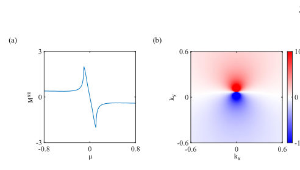
<figcaption class="paper-figure-caption"><b>Fig 1.</b> FIG. 2. (a) Spin dipole density M xz as a function of the normal state chemical potential µ. (b) k-space distribution of the integrand of the spin dipole density, i.e., fmxz + gΩz x (in units of vF /∆). In the calculations, we take T = 0.03∆and Vx = 0.5∆.</figcaption>
</figure>
<figure class="paper-figure-card">
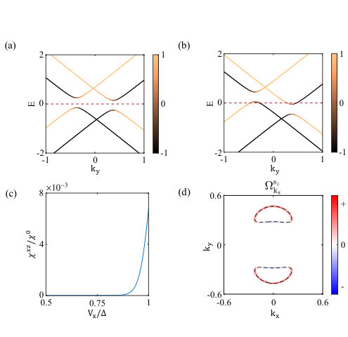
<figcaption class="paper-figure-caption"><b>Fig 2.</b> FIG. 1. (a) Energy dispersion as a function of ky in the ab- sence of Bogoliubov Fermi surfaces Vx = 0.5∆. (b) Energy dispersion for Vx = 1.25∆, where Bogoliubov Fermi surfaces emerge and the spectrum becomes gapless. The color scale represents the effective charge of the Bogoliubov quasiparti- cles. (c) Dependence of the spin polarization response coeffi- cient χxz on Vx at T = 0.01∆. Here, χ0 = ℏkB/vF . (d) The distribution of spin Berry curvature Ωsz kx around the Bogoli- ubov Fermi surfaces (dashed lines), with the same parameters as in (b).</figcaption>
</figure>
<figure class="paper-figure-card">
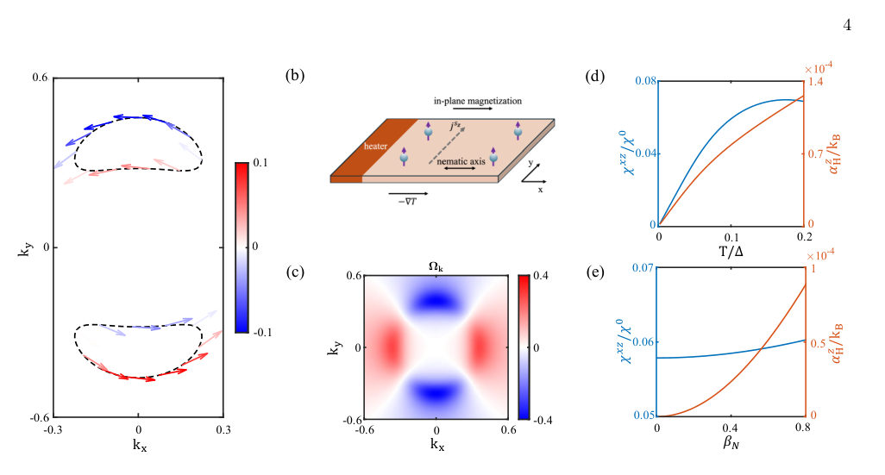
<figcaption class="paper-figure-caption"><b>Fig 3.</b> FIG. 3. (a) Spin texture of the quasiparticles on the Bogoliubov Fermi surfaces (dashed line) in the presence of the nematic term. The arrows indicate the in-plane components of the spin, whereas the color scale represents the out-of-plane component sz (dimensionless). (b) Schematic illustration of the thermal response geometry. The temperature gradient ∇T and the in-plane magnetization Vx are both applied along the x direction. The double arrow indicates the orientation of the nematic axis. The thermally induced spin polarization is along the out-of-plane z direction and thermally induced transverse spin current jsz is along the y direction. (c) Berry curvature distribution Ωk in momentum...</figcaption>
</figure>
</div>

<p><strong>Summary.</strong> This work theoretically examines how thermal gradients induce spin polarization and spin currents in proximity superconductors exhibiting Bogoliubov Fermi surfaces. By incorporating nematicity and in-plane magnetization into the model, the authors show that these superconducting features lead to enhanced spin responses. The key finding is the linear-in-temperature dependence of these responses, suggesting a unique spintronic character for such superconducting interfaces.</p>
<p><strong>Why it may be interesting.</strong> The linear-in-T dependence found for the spin responses at low temperatures provides a distinct, measurable signature of gapless superconducting quasiparticles, which is highly relevant for understanding superconducting spintronics.</p>
<details>
<summary>Detailed structure</summary>
<p><strong>Main problem.</strong> The study investigates the thermal responses of spin density and spin current generated by Bogoliubov Fermi surfaces within proximity superconducting systems.</p>
<p><strong>Main result.</strong> The spin responses are strongly enhanced by the presence of Bogoliubov Fermi surfaces and exhibit a unique linear-in-temperature dependence at low temperatures.</p>
<p><strong>Method.</strong> The analysis employs a semiclassical theory approach, utilizing the Bogoliubov-de Gennes (BdG) Hamiltonian to calculate spin dipole density and transport coefficients.</p>
<p><strong>Model / system.</strong> The system is a proximity superconducting interface related to iron-based superconductors, modeled using a minimal monolayer Hamiltonian incorporating in-plane magnetization and nematicity.</p>
<p><strong>Key observables.</strong> Spin polarization ($\delta s_{	ext{loc}}$), spin current ($J_{s\alpha}$), spin Berry curvature ($\Omega_{ki}^s$), and the spin Nernst conductivity ($\alpha_{s\alpha}^H$).</p>
<p><strong>Important parameters / regimes.</strong> Temperature gradient ($
abla T$), in-plane magnetization ($V_x$), and nematic coupling strength ($eta_N$).</p>
<p><strong>Assumptions / limitations.</strong> The analysis relies on a semiclassical theory approach and assumes the validity of the Onsager reciprocity relation for spin current calculations.</p>
<p><strong>Figures summary.</strong> Figures illustrate the emergence of gapless Bogoliubov Fermi surfaces, the momentum space distribution of spin Berry curvature, and the temperature dependence of the spin polarization response coefficient ($\chi_{xz}$) and spin Nernst conductivity ($\alpha_{zH}$).</p>
<p><strong>Paper structure.</strong> The paper develops the theoretical framework by defining the BdG Hamiltonian, deriving equations for spin density and spin current responses, and then calculating the key coefficients ($\chi_{is}$, $\alpha_{s\alpha}^H$) based on the resulting Bogoliubov Fermi surfaces.</p>
</details>
<details>
<summary>Abstract</summary>
<p>The emergence of Bogoliubov Fermi surfaces in s-wave proximity superconducting systems provides a unique platform for generating nontrivial spin responses in the presence of spin-orbit coupling. In this work, we investigate temperature-gradient driven responses of spin polarization and spin current in such a proximity system related to Fe(Te,Se). The interplay of in-plane magnetization, superconductivity, and nematicity gives rise to nontrivial Berry curvature and spin-related hybrid Berry curvature on the Bogoliubov Fermi surfaces, which are shown to lead to finite thermally driven nonequilibrium spin polarization and spin Nernst effect. We find that the responses are strongly enhanced by the emergence of Bogoliubov Fermi surfaces, and are linear in temperature at low temperatures, rendering a unique spintronic character of Bogoliubov Fermi surfaces.</p>
</details>
<p><sub><a href="#top">↑ back to top</a></sub></p>

<p><a id="paper-2610.24746"></a></p>
<h3 id="boosting-fluorescence-and-polarization-with-nanophotonics-for-single-molecule-chiral-sensing"><a href="http://arxiv.org/abs/2610.24746v1">Boosting fluorescence and polarization with nanophotonics for single-molecule chiral sensing</a></h3>
<p><strong>Authors:</strong> Ershad Mohammadi, T. V. Raziman, Alberto G. Curto<br>
<strong>Type:</strong> theory · <strong>Category:</strong> other · <strong>PDF:</strong> <a href="https://arxiv.org/pdf/2610.24746v1">https://arxiv.org/pdf/2610.24746v1</a><br>
<strong>Analysis basis:</strong> full PDF text, analyzed in chunks
<strong>Topic relevance:</strong> <code>interference shaping light</code> <strong>3/5</strong></p>
<div class="figure-strip-hint">↔ Scroll figures horizontally</div>
<div class="paper-figures-scroll">
<figure class="paper-figure-card">
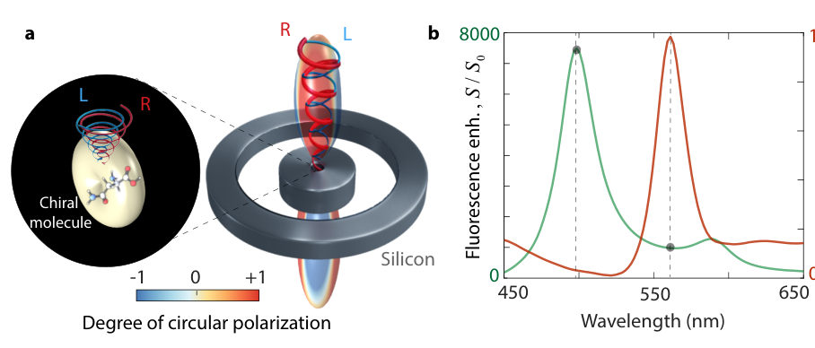
<figcaption class="paper-figure-caption"><b>Fig 1.</b> Figure 1: Boosting circularly polarized fluorescence from a chiral molecule with a high-index dielectric nanostructure. (a) A fluorescent chiral molecule with a small dissymmetry factor emits nearly equal right- and left-handed circularly polarized light in free space (R and L; red and blue helices). A holey disk–ring nanoresonator enhances both the fluorescence intensity and the polarization contrast of the emitter. (b) Enhancements of fluorescence and degree of circular polarization (DOCP) for a chiral emitter with dissym- metry parameter α = 0.005 and intrinsic quantum yield η = 0.001. The structure provides approximately one order-of-magnitude enhancement in DOCP at λ = 560 nm, together...</figcaption>
</figure>
<figure class="paper-figure-card">
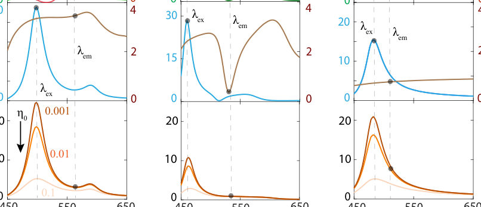
<figcaption class="paper-figure-caption"><b>Fig 2.</b> Figure 2: Contributions to circularly polarized fluorescence for different nanos- tructures. Top: fluorescence and DOCP enhancements (green and red). Center: excitation and collection efficiency enhancements (blue and brown). Bottom: quantum efficiency en- hancement (orange) for an x-oriented chiral emitter placed at the center of the hole in each structure, with parameters defined in the text. The green and orange curves represent in- creasing values of the intrinsic molecular quantum yield for a fixed intrinsic DOCP = 0.01 (α = 0.005).</figcaption>
</figure>
<figure class="paper-figure-card">
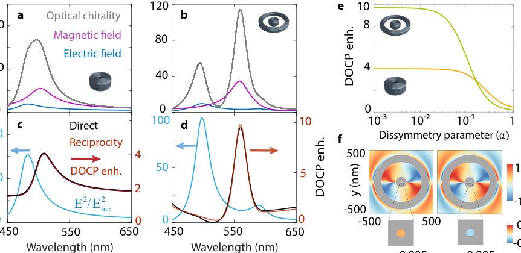
<figcaption class="paper-figure-caption"><b>Fig 3.</b> Figure 3: Reciprocity framework for enhanced chiral emission. (a,b) Electric, magnetic, and optical chirality enhancements (blue, magenta, grey) for the holey disk and disk–ring A configurations, evaluated at the symmetry point under normal illumination by a circularly polarized plane wave. (c,d) Comparison of the polarization enhancements calculated through reciprocity using Equation 5 (black) and direct numerical simulations (red), displaying the DOCP increase in the normal direction for a chiral emitter at the symmetry point. The electric field intensity enhancement (blue) is shown for reference. (e) DOCP enhancement as a function of intrinsic dissymmetry parameter α. (f) DOCP for...</figcaption>
</figure>
<figure class="paper-figure-card">
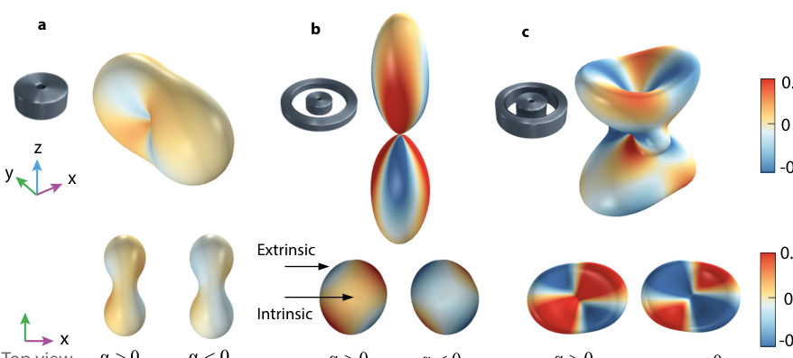
<figcaption class="paper-figure-caption"><b>Fig 4.</b> Figure 4: Angular patterns with intrinsic and extrinsic polarization. Radiation pat- terns with color-coded degree of circular polarization for a chiral emitter with dissymmetry parameter α = 0.005, placed at the symmetry point of the three studied configurations: (a) holey disk, and (b,c) disk–ring systems A and B. Their geometrical parameters are as in Figure 2. Bottom: top views of the radiation patterns for opposite molecular handednesses (α = ±0.005) highlighting intrinsic polarization features that reverse with molecular chiral- ity and extrinsic polarization induced by the nanostructure.</figcaption>
</figure>
<figure class="paper-figure-card">
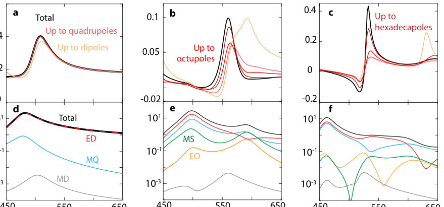
<figcaption class="paper-figure-caption"><b>Fig 5.</b> Figure 5: Multipolar expansion of circular polarization enhancement. Multipole contributions to the DOCP emitted in the normal direction and the total radiated power for the three structures in Figure 2 excited by a chiral dipole with α = 0.005. E and M denote electric and magnetic multipoles. D, Q, O, and S stand for the dipole, quadrupole, octupole, and hexadecapole, respectively. For polarization, the cumulative sum of multipolar fields is considered to identify relevant multipole combinations creating chiral emission. For radiated power, the contributions of individual multipoles are presented to determine the dominant term for emitted intensity.</figcaption>
</figure>
</div>

<p><strong>Summary.</strong> This paper proposes using high-index dielectric nanophotonics to overcome the sensitivity limitations in single-molecule chiral sensing. By developing a reciprocity-based framework, the authors show how structuring the nanoantenna can simultaneously boost both the fluorescence intensity and the polarization contrast of the emitted light. This opens a realistic path for ultrasensitive chiral detection at the single-molecule level.</p>
<p><strong>Why it may be interesting.</strong> This work provides a detailed theoretical roadmap for enhancing fundamental optical properties (fluorescence and polarization) in nanoscale systems, which is highly relevant to quantum optics and the development of quantum sensors.</p>
<details>
<summary>Detailed structure</summary>
<p><strong>Main problem.</strong> The primary challenge is achieving single-molecule sensitivity for chiral detection, which is limited by weak signals and low polarization contrast in current methods.</p>
<p><strong>Main result.</strong> The authors demonstrate that tailoring achiral dielectric nanostructures can simultaneously achieve a 1000-fold enhancement in fluorescence intensity and a 10-fold increase in polarization contrast.</p>
<p><strong>Method.</strong> They develop a reciprocity-based analytical framework and use full-wave finite-element simulations to model the coupling between chiral emitters and high-index dielectric nanoantennas.</p>
<p><strong>Model / system.</strong> The physical system involves a chiral molecule coupled to high-index dielectric nanophotonics, specifically a holey disk surrounded by a concentric ring structure. The analysis models the enhancement of fluorescence and the Degree of Circular Polarization (DOCP) using field theory.</p>
<p><strong>Key observables.</strong> Fluorescence intensity (S), Degree of Circular Polarization (DOCP), Electric field enhancement, Magnetic field enhancement, and Optical chirality enhancement.</p>
<p><strong>Important parameters / regimes.</strong> Intrinsic dissymmetry parameter (α), enhancement factors (e.g., 1000-fold fluorescence, 10-fold DOCP), and the geometry of the nanostructure (e.g., disk/ring dimensions).</p>
<p><strong>Assumptions / limitations.</strong> The analysis assumes the ability to separate intrinsic molecular chirality effects from extrinsic polarization effects induced by the nanostructure, and that the emitter can be positioned near the structure's symmetry point.</p>
<p><strong>Figures summary.</strong> Figures illustrate the concept of enhancement (free space vs. nanoresonator), quantitative enhancement of fluorescence and DOCP for various designs, and detailed analysis of field enhancements (electric, magnetic, optical chirality) and angular emission patterns.</p>
<p><strong>Paper structure.</strong> The paper establishes the need for simultaneous enhancement, develops a reciprocity-based framework relating DOCP to near-field quantities, applies this framework to specific disk-ring nanostructures, and concludes by showing the necessity of accounting for extrinsic polarization effects for reliable sensing.</p>
</details>
<details>
<summary>Abstract</summary>
<p>Detecting chirality is essential in chemistry and biomedicine. Circular dichroism identifies chiral molecules through their differential absorption of circularly polarized light. However, its sensitivity is limited by vanishing absorption at low concentrations. Fluorescence-based methods have already enabled other optical techniques to reach the single-molecule limit and could, in principle, also extend chiral detection to reach this sensitivity regime. They are marred, however, by the combination of weak fluorescence signals and low polarization contrast. To overcome these limitations, we leverage high-index dielectric nanophotonics to simultaneously enhance both fluorescence and polarization for chiral sensing. We propose a reciprocity-based analytical framework for a chiral dipolar emitter coupled to a nanoantenna and reveal the different contributions and trade-offs governing the enhancement of circularly polarized fluorescence. Guided by this insight, we tailor achiral dielectric nanostructures to reach a 1000-fold enhancement of fluorescence intensity together with a 10-fold increase in polarization. Crucially, we show that accounting for extrinsic polarization effects in the angular emission patterns of nanophotonic structures is indispensable for reliable enantiomer discrimination. Our approach opens a realistic path for single-molecule chiral sensing.</p>
</details>
<p><sub><a href="#top">↑ back to top</a></sub></p>

<p><a id="paper-2610.24300"></a></p>
<h3 id="development-of-microwave-multiplexed-readout-for-athermal-phonon-tes-based-detectors"><a href="http://arxiv.org/abs/2610.24300v1">Development of microwave multiplexed readout for athermal phonon TES-based detectors</a></h3>
<p><strong>Authors:</strong> Tran Tsan, Douglas A. Bennett, Daniel T. Becker, Rebecca Carney, Johnathon D. Gard, John A. B. Mates, Joel N. Ullom, Michael R. Williams, John C. Groh<br>
<strong>Type:</strong> experiment · <strong>Category:</strong> other · <strong>PDF:</strong> <a href="https://arxiv.org/pdf/2610.24300v1">https://arxiv.org/pdf/2610.24300v1</a><br>
<strong>Analysis basis:</strong> full PDF text, analyzed in chunks
<strong>Topic relevance:</strong> <code>quantum measurements</code> <strong>3/5</strong></p>
<div class="figure-strip-hint">↔ Scroll figures horizontally</div>
<div class="paper-figures-scroll">
<figure class="paper-figure-card">
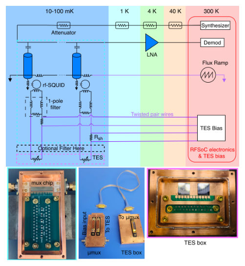
<figcaption class="paper-figure-caption"><b>Fig 1.</b> Fig. 1: Schematic (top) and photographs (bottom) of our R&amp;D setup. The basic µmux architecture follows [5], [9], with modifications for athermal phonon TES testing. The readout and detectors are housed in separate enclosures connected by twisted pair wires and 25-pin micro-D connectors. This separation permits optional inline filtering to reduce readout leakage into the detectors.</figcaption>
</figure>
<figure class="paper-figure-card">
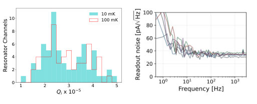
<figcaption class="paper-figure-caption"><b>Fig 2.</b> Fig. 3: Left: distribution of the resonator internal quality factors at 10 and 100 mK. The two distributions show that Qi does not change significantly at lower temperature. Right: power spectral density of the input current for different readout channels. The noise floor corresponds to ≈3.8 µΦ0/ √</figcaption>
</figure>
<figure class="paper-figure-card">
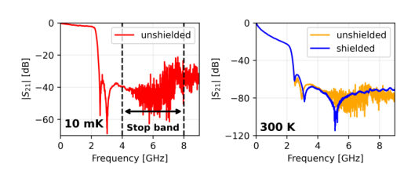
<figcaption class="paper-figure-caption"><b>Fig 3.</b> Fig. 2: LTCC candidate filter performance. Left panel: cryo- genic transmission when tested without any radiation shield- ing. The stop band rejection is ≳30 dB, but with oscillations due to radiative coupling to the fridge’s mixing chamber can. Right panel: room temperature verification that the high- frequency oscillations can be removed with a simple radiation shield surrounding the filter component.</figcaption>
</figure>
<figure class="paper-figure-card">
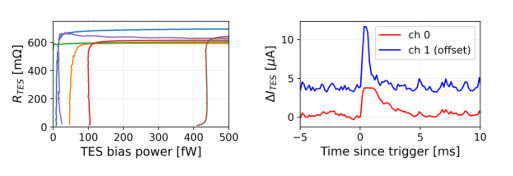
<figcaption class="paper-figure-caption"><b>Fig 4.</b> Fig. 4: Left: resistance vs. bias power relationships for the six TES devices tested, demonstrating that a wide range of saturation powers are feasible with our setup. The data points inside the superconducting transition regions are slightly con- taminated by the influence of residual background pulses; the jagged shapes are therefore not expected to reflect the true zero-frequency TES behavior. Right: examples of correlated pulses (indicative of athermal phonon bursts) detected with two QET channels on the same chip tuned into their super- conducting transition.</figcaption>
</figure>
<figure class="paper-figure-card">
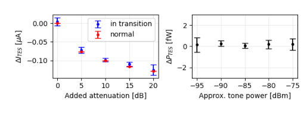
<figcaption class="paper-figure-caption"><b>Fig 5.</b> Fig. 5: Left: measured baseline readout signal shifts due to varying the tone power and phase. Right: change in power sensed by the TES, inferred through the nominal responsivity. The uncertainty is presently dominated by the high background pulse rate in our setup, as is evident from the significantly larger uncertainty on the current measurement while in the transition than above it.</figcaption>
</figure>
</div>

<p><strong>Summary.</strong> This work details the development and testing of a microwave multiplexed readout system designed for next-generation athermal phonon TES detectors. By addressing the scalability bottlenecks of conventional readout methods, the authors demonstrated that the system can operate with extremely low background loads, paving the way for large-scale, ultra-sensitive detectors for rare event searches like dark matter detection.</p>
<p><strong>Why it may be interesting.</strong> While the focus is on detector technology rather than fundamental quantum dynamics, the use of superconducting circuits, cryogenic electronics, and quantum-limited noise measurements touches upon advanced topics in quantum measurement and low-noise physics.</p>
<details>
<summary>Detailed structure</summary>
<p><strong>Main problem.</strong> The primary goal is to develop a practical, highly multiplexed microwave readout system for athermal phonon Transition Edge Sensors (TESs) to overcome scalability limits for low-mass dark matter searches.</p>
<p><strong>Main result.</strong> The authors demonstrated proof-of-concept multiplexed readout of background pulses, bounding the readout's parasitic background load to less than 1 fW, and established LTCC filters as viable inline microwave suppression components.</p>
<p><strong>Method.</strong> The research involves characterizing the readout functionality and noise level in a dilution refrigerator testbed using a Software-Defined Radio (SDR) based on an RFSoC, while testing various TES types.</p>
<p><strong>Model / system.</strong> The system utilizes athermal phonon TESs, superconducting sensors optimized for sub-eV energy detection. The readout employs a $\mu$mux chip architecture, adapted from higher-power detectors, operating at cryogenic temperatures ($\sim 10$ mK).</p>
<p><strong>Key observables.</strong> Noise level (e.g., $34 	ext{ pA}/\sqrt{	ext{Hz}}$), parasitic background load ($<1 	ext{ fW}$), and microwave filter rejection ($>20 	ext{ dB}$ at 10 mK).</p>
<p><strong>Important parameters / regimes.</strong> TES Saturation Power ($P_{sat}$) in the fW range, operating temperature ($\sim 10 	ext{ mK}$), and the required scalability to $O(10^3)$ sensors.</p>
<p><strong>Assumptions / limitations.</strong> The primary challenge addressed is adapting multiplexing technology designed for higher $P_{sat}$ detectors to the extremely low $P_{sat}$ of athermal phonon TESs.</p>
<p><strong>Figures summary.</strong> Figures illustrate the R&amp;D setup (separated TES and $\mu$mux boxes), LTCC filter performance (cryogenic vs. room temperature transmission), and measurements of the detector's quality factor ($Q_i$) and noise spectra.</p>
<p><strong>Paper structure.</strong> The paper details the development of the microwave readout system, characterizes its noise and filtering capabilities, demonstrates its compatibility with low-$P_{sat}$ TESs, and discusses the feasibility of scaling the detector array.</p>
</details>
<details>
<summary>Abstract</summary>
<p>Continued advancements in sub-eV calorimetric measurements are being enabled through the athermal phonon detection channel, with applications spanning a diverse array of fields, including low-mass dark matter searches, coherent elastic neutrino-nucleus scattering, and quantum information science. While Transition Edge Sensors (TESs) have achieved the lowest thresholds to date, they face significant scalability bottlenecks due to the inherent constraints of conventional SQUID readout architectures. To address this limitation, we present an update on R&amp;D to develop practical, highly multiplexed, microwave readout for athermal phonon TESs, which can enable a dramatic increase in both sensor count and target mass, with a focus on sub-GeV dark matter searches as a target application. This work leverages advances from highly scaled mm-wave, x-ray, and gamma-ray TES systems, adapting them to the unique needs of low-threshold rare event measurements. We quantify the basic readout functionality and noise level in our dilution refrigerator testbed and demonstrate operation of a variety of TES devices with saturation powers significantly lower than mm-wave and x-ray devices. We demonstrate proof-of-concept multiplexed readout of background event pulses, bound the readout's contribution to the parasitic TES background load to &lt;1 fW, and discuss a cryogenic inline RF filtering scheme. These results demonstrate practical solutions to several of the key challenges that must be solved before a next-generation athermal phonon detector at scale is realized.</p>
</details>
<p><sub><a href="#top">↑ back to top</a></sub></p>

<p><a id="paper-2610.26387"></a></p>
<h3 id="ultrafast-proton-induced-collective-dynamics-regulated-by-water-mediated-hydrogen-bond-networks-in-liquids"><a href="http://arxiv.org/abs/2610.26387v1">Ultrafast Proton-Induced Collective Dynamics Regulated by Water-Mediated Hydrogen-Bond Networks in Liquids</a></h3>
<p><strong>Authors:</strong> Xiaokun Liu, Bozhu Chen, Yizhu Zhang, Jiyu Xu, Meng Li, Yanjun Gao, Ji Qi, Yuqian Yang, Wennan Wang, Sheng Meng, Yuhai Jiang<br>
<strong>Type:</strong> both · <strong>Category:</strong> other · <strong>PDF:</strong> <a href="https://arxiv.org/pdf/2610.26387v1">https://arxiv.org/pdf/2610.26387v1</a><br>
<strong>Analysis basis:</strong> full PDF text, analyzed in chunks
<strong>Topic relevance:</strong> <code>Keldysh / 2PI / non-Gaussian methods</code> <strong>2/5</strong> · <code>correlated / nonlocal dissipation</code> <strong>2/5</strong> · <code>driven-dissipative phase transition</code> <strong>2/5</strong> · <code>methods for driven-dissipative</code> <strong>2/5</strong> · <code>non-equilibrium universality</code> <strong>2/5</strong> · <code>quantum measurements</code> <strong>1/5</strong></p>
<div class="figure-strip-hint">↔ Scroll figures horizontally</div>
<div class="paper-figures-scroll">
<figure class="paper-figure-card">
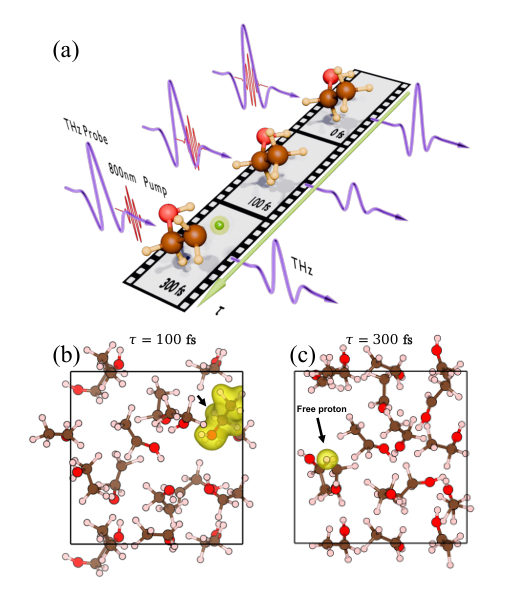
<figcaption class="paper-figure-caption"><b>Fig 1.</b> FIG. 1. Schematic illustration of the experiment and the- oretical simulation of electron density. (a) The schematic is structured into three parts: 800 nm and THz incident lights (left), ethanol sample (middle), and THz transmitted light (right). Brown, red, and pale yellow spheres in ethanol sample represent carbon, oxygen, and hydrogen atoms, respectively, while the green sphere represents a free proton. (b) and (c) Theoretically simulated electron density distributions around one ethanol molecule and one free proton at delay times of 100 fs and 300 fs, respectively.</figcaption>
</figure>
<figure class="paper-figure-card">
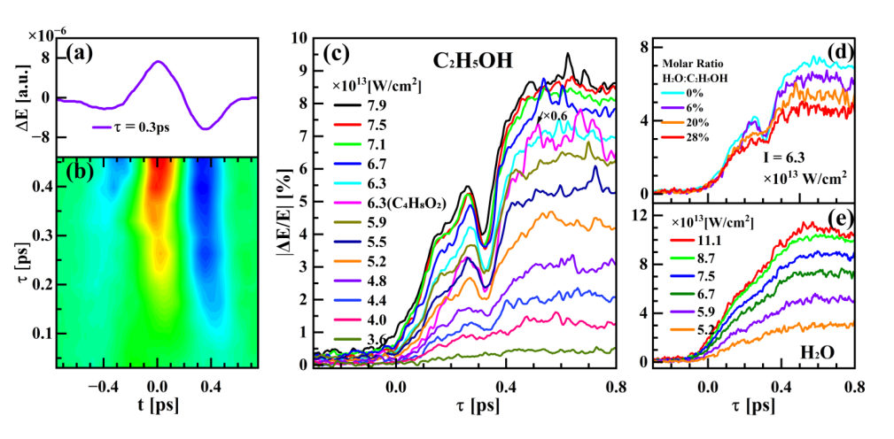
<figcaption class="paper-figure-caption"><b>Fig 2.</b> FIG. 2. Experimental optical-pump THz-probe spectroscopy. (a) Transient THz waveform slices ∆E(t) at selected pump–probe delays τ ≈0.3 ps.(b) Two–dimensional evolution of the pump-induced change in the THz electric field, ∆E(τ, t), as a function of THz sampling time t and pump-probe delay τ. (c) Evolution of the THz absorption change |∆E/E| extracted at t ≈0 ps in (b) as a function of pump–probe delay τ for pure ethanol at varying pump intensities. The pink curve represents the ethyl acetate trace measured at I = 6.3 × 1013 W/cm2, scaled by a factor of 0.6. (d) |∆E/E| as a function of τ for ethanol–water mixture with water mole fractions of 0%, 6%, 20%, and 28% at a pump intensity I = 6.3 ×...</figcaption>
</figure>
<figure class="paper-figure-card">
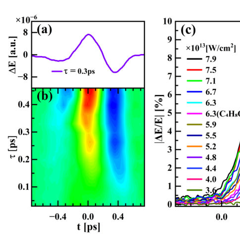
<figcaption class="paper-figure-caption"><b>Fig 3.</b> Fig. 2(e) shows the OPTP results of typical ionized aqueous solutions such as water. The pump beam ion- izes the solution, generating quasi-free electrons. These quasi-free electrons absorb THz radiation, leading to a decrease in the THz electric field transmitted through the liquid, hence ∆E &lt; 0. For 0 &lt; τ &lt; 500 fs, the rapid increase in |∆E(τ)/E| indicates a rapid increase in the density of quasi-free electrons in the liquid due to pho- toionization. The photoionization process itself occurs within 60 fs, but the rise in quasi-free electron density lasts for about 500 fs, which is attributed to the solva-</figcaption>
</figure>
<figure class="paper-figure-card">
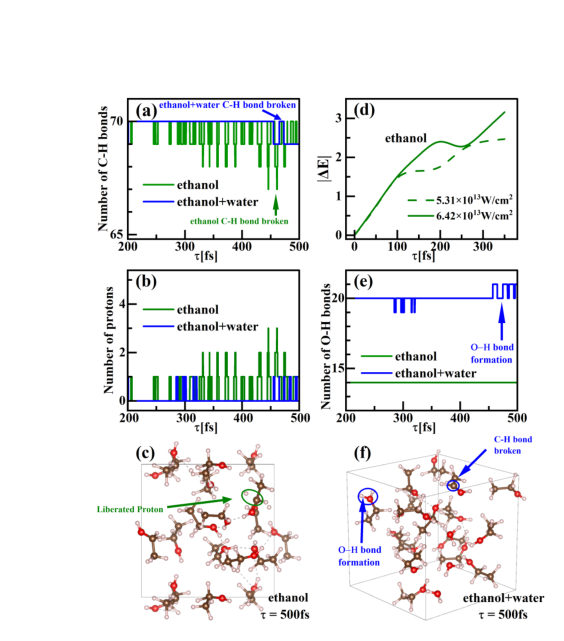
<figcaption class="paper-figure-caption"><b>Fig 4.</b> FIG. 3. Simulation results from rt-TDDFT. (a) Number of C– H bonds, NC−H, within the unit cell for pure ethanol (green) and ethanol-water mixture (blue). (b) Statistics of the num- ber of H+, NH+. (c) Schematic illustration of the ethanol unit cell at τ = 500 fs, showing C–H bond cleavage and a free pro- ton. (d) Theoretically simulated change in THz absorption, ∆E/E, as a function of pump-probe delay τ under different pump intensities. (e) Statistics of the number of O–H bonds, NO−H. The blue arrow indicates the increase at τ = 500 fs. (f) Schematic illustration of the unit cell for the ethanol-water mixture at τ = 500 fs, depicting C–H bond cleavage and the process of bonding with OH2.</figcaption>
</figure>
</div>

<p><strong>Summary.</strong> This paper uses combined THz spectroscopy and advanced simulations to track proton dynamics in liquid organic solvents. It establishes that photoionization triggers proton release from C-H bonds, which creates a measurable transient electronic signature. Crucially, it demonstrates that the surrounding hydrogen-bond network actively regulates this process by scavenging free protons, linking local chemistry to collective electronic behavior.</p>
<p><strong>Why it may be interesting.</strong> The coupling between local bond cleavage (C-H activation) and the collective, ultrafast charge response of the solvent (THz signal) is a key topic in non-equilibrium quantum dynamics, highly relevant to AMO physics and open quantum systems.</p>
<details>
<summary>Detailed structure</summary>
<p><strong>Main problem.</strong> The study investigates the ultrafast dynamics of protons following photoexcitation in liquids, specifically determining the role of alkyl C-H sites as proton donors and how hydrogen-bond networks regulate the subsequent proton and electron transport.</p>
<p><strong>Main result.</strong> The research identifies photoactivated C-H sites as the primary proton sources, evidenced by a characteristic V-shaped transient in THz absorption, and shows that water-mediated hydrogen-bond networks suppress this transient by facilitating proton recombination.</p>
<p><strong>Method.</strong> The work combines experimental Optical-Pump Terahertz-Probe (OPTP) spectroscopy with real-time time-dependent density-functional-theory (rt-TDDFT) simulations.</p>
<p><strong>Model / system.</strong> The system involves liquid ethanol, ethyl acetate, and their mixtures with water, focusing on the dynamics of proton transfer and quasi-free electron localization in these condensed phases.</p>
<p><strong>Key observables.</strong> Transient change in THz absorption ($\Delta E/E$), quasi-free electron localization (V-shaped transient), and proton transfer rates.</p>
<p><strong>Important parameters / regimes.</strong> Ultrafast timescales (hundreds of femtoseconds), and the concentration of water in the liquid mixture.</p>
<p><strong>Assumptions / limitations.</strong> The analysis assumes that the THz signal is governed by liquid conductivity dynamics ($\Delta\sigma \propto \Delta n$) and that C-H cleavage is the dominant proton source under the studied conditions.</p>
<p><strong>Figures summary.</strong> Figures show OPTP results for pure water and ethanol, illustrating the V-shaped dip attributed to C-H cleavage, and how this dip attenuates in ethanol-water mixtures as water content increases.</p>
<p><strong>Paper structure.</strong> The paper establishes the problem of proton dynamics, presents OPTP and rt-TDDFT results comparing pure liquids (ethanol, water) and mixtures, confirms C-H origin via control experiments, and concludes by linking local bond cleavage to collective charge response.</p>
</details>
<details>
<summary>Abstract</summary>
<p>Photoinduced proton dynamics in liquids couple molecular reactions to nonequilibrium charge transport, yet the role of alkyl C-H sites as proton sources remains poorly understood. Combining optical-pump terahertz-probe spectroscopy with real-time time-dependent density-functional-theory simulations, we investigate ultrafast proton dynamics following strong-field ionization of liquid ethanol and hydroxyl-free ethyl acetate. Isotope-substitution and control experiments support the identification of alkyl C-H groups as the proton source. The released protons induce quasi-free-electron localization on a timescale of hundreds of femtoseconds, manifested as a characteristic V-shaped transient in terahertz absorption. In ethanol-water mixtures, trace water enhances hydrogen-bond-network connectivity and facilitates proton transfer to ethanol O-H sites, suppressing the transient absorption dip. These findings identify photoactivated C-H sites as proton sources in liquids and reveal how hydrogen-bond networks regulate the ensuing proton and electron dynamics, linking local bond cleavage to the ultrafast charge response of the surrounding liquid.</p>
</details>
<p><sub><a href="#top">↑ back to top</a></sub></p>

<p><a id="paper-2610.26163"></a></p>
<h3 id="bicircular-light-tunable-topological-phases-and-nonlinear-hall-responses-in-odd-parity-magnets"><a href="http://arxiv.org/abs/2610.26163v1">Bicircular light tunable topological phases and nonlinear Hall responses in odd-parity magnets</a></h3>
<p><strong>Authors:</strong> Md Afsar Reja, Awadhesh Narayan<br>
<strong>Type:</strong> theory · <strong>Category:</strong> other · <strong>PDF:</strong> <a href="https://arxiv.org/pdf/2610.26163v1">https://arxiv.org/pdf/2610.26163v1</a><br>
<strong>Analysis basis:</strong> full PDF text, analyzed in chunks
<strong>Topic relevance:</strong> <code>analog quantum simulation</code> <strong>2/5</strong> · <code>driven-dissipative phase transition</code> <strong>2/5</strong> · <code>Keldysh / 2PI / non-Gaussian methods</code> <strong>1/5</strong> · <code>interference shaping light</code> <strong>1/5</strong> · <code>methods for driven-dissipative</code> <strong>1/5</strong> · <code>non-equilibrium universality</code> <strong>1/5</strong></p>
<div class="figure-strip-hint">↔ Scroll figures horizontally</div>
<div class="paper-figures-scroll">
<figure class="paper-figure-card">
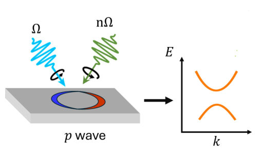
<figcaption class="paper-figure-caption"><b>Fig 1.</b> FIG. 1. Schematic of the illuminated odd-parity mag- net setup. Bicircular light drives topological phase transi- tions in odd-wave magnets and simultaneously enables tun- able nonlinear Hall responses. The counter-rotating Ω−nΩ bicircular light is shown illuminating a p-wave magnet as a representative.</figcaption>
</figure>
<figure class="paper-figure-card">
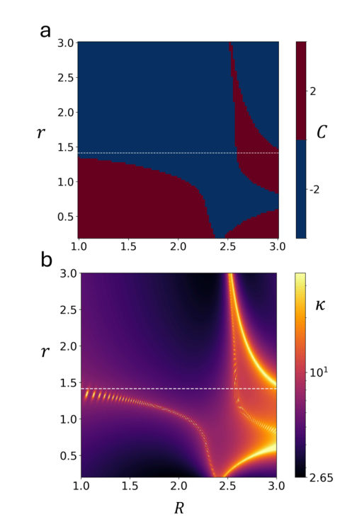
<figcaption class="paper-figure-caption"><b>Fig 2.</b> FIG. 2. Chern number and quantum weight for the p-wave magnet under bicircular drive. (a) Topological phase diagram showing Chern number as a function of the total light amplitude R and the relative amplitude ratio r. (b) The quantum weight is presented in the same phase space. We find that the quantum weight satisfies the geometric bound throughout the (R, r) parameter space, reaching large values near the phase boundaries. The other parameters are chosen to be n = 2, α = 0, t = 0.1, µ = −1.0, λ = 0.1, Jp = 0.3, θp = π/4, and Ω= 3.0.</figcaption>
</figure>
<figure class="paper-figure-card">
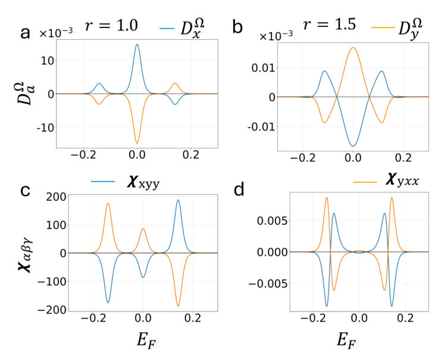
<figcaption class="paper-figure-caption"><b>Fig 3.</b> FIG. 3. Nonlinear responses of the bicircular light driven p-wave magnet. Berry curvature dipole response for (a) r = 1.0 and (b) r = 1.5. The blue and orange curves show DΩ x and DΩ y , respectively. Berry connection polarizability response for (c) r = 1.0 and (d) r = 1.5. Here the blue and orange curves indicate χxyy and χyxx components, respectively. We note that the relative amplitude ratio of the bicircular drive, r, acts as a tuning knob for the nonlinear responses. We keep the remaining parameters fixed at t = 0.1, λ = 0.1, Jp = 0.3, θp = π/4, α = π/4, n = 2, R = 2, and Ω= 3.0.</figcaption>
</figure>
<figure class="paper-figure-card">
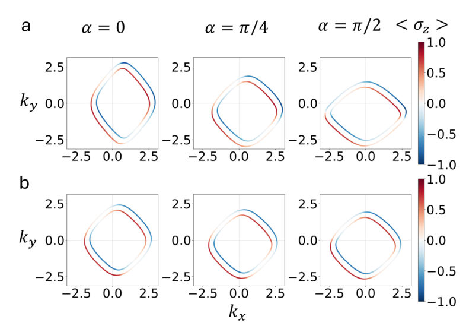
<figcaption class="paper-figure-caption"><b>Fig 4.</b> FIG. 4. Spin texture of the driven p-wave magnet. The expectation value of the z component of the spin is plotted across kx −ky for (a) r = 0.5 and (b) r = 2.0. The three columns show α = 0, π/4, and π/2, respectively. We find that the spin texture can be tuned by the bicircular light parameters, in particular the relative amplitude ratio r and the relative phase α. Other parameters were chosen to be t = 1, µ = −0.250, λ = 0.3, Jp = 0.3, θp = π/4, Ω= 3.0, n = 3, and R = 2.</figcaption>
</figure>
<figure class="paper-figure-card">
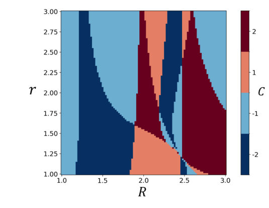
<figcaption class="paper-figure-caption"><b>Fig 5.</b> FIG. 5. Chern number phase diagram of bicircular light illuminated f-wave magnet. Bicircular light induces multiple topological phases characterized by C = ±1 and C = ±2. The phase boundaries are controlled by the total driving amplitude R and the relative amplitude ratio r. Here we set other parameters as n = 2, α = 0, t = 0.1, µ = −1.0, λ = 0.1, Jf = 0.3, and Ω= 3.0.</figcaption>
</figure>
</div>

<p><strong>Summary.</strong> This work demonstrates how illuminating odd-parity magnets with bicircular light can induce controlled topological phase transitions. By analyzing the effective Hamiltonian via Floquet theory, the authors show that the light parameters can tune the Chern number. Furthermore, they establish that this driving mechanism generates and controls nonlinear Hall responses, providing a powerful tool for manipulating topological properties in magnetic materials.</p>
<p><strong>Why it may be interesting.</strong> The explicit use of light-matter interaction (Floquet engineering) to control topological invariants and nonlinear transport in magnetic systems bridges quantum optics, condensed matter theory, and topological physics.</p>
<details>
<summary>Detailed structure</summary>
<p><strong>Main problem.</strong> The study investigates light-induced topological phase transitions and the generation of nonlinear Hall responses in odd-parity magnets.</p>
<p><strong>Main result.</strong> Bicircular light can directly control topological phase transitions, leading to tunable Chern numbers, and unlocks nonlinear Hall responses governed by specific selection rules.</p>
<p><strong>Method.</strong> The analysis employs Floquet theory and high-frequency expansions to derive effective Hamiltonians, followed by calculations of topological invariants and nonlinear response tensors.</p>
<p><strong>Model / system.</strong> The system models odd-parity $p$-wave and $f$-wave magnets, which are subjected to time-periodic driving from counter-rotating bicircular light.</p>
<p><strong>Key observables.</strong> Chern number (C), quantum weight (K), Berry curvature dipole (BCD), and Berry connection polarizability (BCP).</p>
<p><strong>Important parameters / regimes.</strong> Total light amplitude (R), relative amplitude ratio (r), and the frequency ratio (n) of the driving light.</p>
<p><strong>Assumptions / limitations.</strong> The analysis relies on the high-frequency expansion (Floquet-Magnus expansion) of the time-dependent Hamiltonian.</p>
<p><strong>Figures summary.</strong> Figure 1 schematically illustrates the setup for light-driven topological transitions and nonlinear responses in a p-wave magnet. Figure 2 maps the topological phase diagram (Chern number and quantum weight) in the (R, r) plane.</p>
<p><strong>Paper structure.</strong> The paper systematically analyzes the effective Hamiltonian under bicircular driving, determines the conditions for topological phase transitions via the Floquet mass, and then calculates the resulting nonlinear transport responses for both p-wave and f-wave models.</p>
</details>
<details>
<summary>Abstract</summary>
<p>Altermagnets are an emerging class of magnetic materials that exhibit characteristic features of both ferromagnets and antiferromagnets. Odd-wave magnets, where the momentum-dependent spin splitting follows an odd-parity form factor, provide a distinct platform for exploring unconventional magnetic and topological phenomena. In this work, we demonstrate light-induced topological phase transitions in odd-parity magnets driven by bicircular light. We show that a cascade of topological phase transitions occur as the relative amplitude ratio of the two beams is varied. These are accompanied by sharp changes of the quantum metric. We demonstrate that bicircular light unlocks nonlinear Hall responses arising from Berry curvature and quantum metric in irradiated odd-wave magnets, and formulate the underlying selection rules. Our results show that both the topology and the nonlinear responses in odd-parity magnets can be directly controlled by a bicircular drive.</p>
</details>
<p><sub><a href="#top">↑ back to top</a></sub></p>

<p><a id="paper-2610.25452"></a></p>
<h3 id="activating-nonstandard-axion-electrodynamics-in-topological-insulator-materials"><a href="http://arxiv.org/abs/2610.25452v1">Activating Nonstandard Axion Electrodynamics in Topological Insulator Materials</a></h3>
<p><strong>Authors:</strong> Miklós Horváth, Long Liang, Panagiotis Kotetes<br>
<strong>Type:</strong> theory · <strong>Category:</strong> other · <strong>PDF:</strong> <a href="https://arxiv.org/pdf/2610.25452v1">https://arxiv.org/pdf/2610.25452v1</a><br>
<strong>Analysis basis:</strong> full PDF text, analyzed in chunks
<strong>Topic relevance:</strong> <code>Keldysh / 2PI / non-Gaussian methods</code> <strong>2/5</strong> · <code>analog quantum simulation</code> <strong>1/5</strong> · <code>interference shaping light</code> <strong>1/5</strong> · <code>quantum measurements</code> <strong>1/5</strong></p>
<div class="figure-strip-hint">↔ Scroll figures horizontally</div>
<div class="paper-figures-scroll">
<figure class="paper-figure-card">
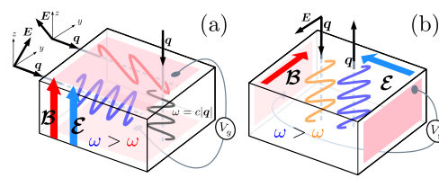
<figcaption class="paper-figure-caption"><b>Fig 1.</b> FIG. 1: Nonstandard AED in P- and T -symmetric 3D TI materials activated by combined static electric E and magnetic B fields. The engineered axion behavior manifests itself as a controllable nonre- ciprocal directional dichroism (NDD). (a) When E||B, diagonal ele- ments of the ME tensor are obtained, and the EM wave propagation is affected by the ME coupling only for fields applied perpendicu- lar to the wave vector q. In this case, the light velocities for linear polarizations parallel to the yz-plane diagonals are distinct and non- reciprocal. (b) For B ⊥E ⊥q, it is off-diagonal elements of the ME tensor that become generated, and lead to analogous NDD effects.</figcaption>
</figure>
</div>

<p><strong>Summary.</strong> This work shows that nonstandard axion electrodynamics can be activated in topological insulators by applying combined electric and magnetic fields, even if the material lacks intrinsic magnetic order. The key prediction is the observation of nonreciprocal directional dichroism (NDD) in light propagation, offering a tunable, symmetry-controlled signature beyond the standard topological response.</p>
<p><strong>Why it may be interesting.</strong> The ability to engineer and probe symmetry-induced ME phenomena using external fields in TIs provides a clean platform for studying topological responses, which is relevant to controlling quantum states via external fields.</p>
<details>
<summary>Detailed structure</summary>
<p><strong>Main problem.</strong> To reveal an original and experimentally straightforward strategy to activate nonstandard axion electrodynamics (AED) effects in topological insulator (TI) materials, going beyond the standard axion picture.</p>
<p><strong>Main result.</strong> Applying combined static electric ($\mathbf{E}$) and magnetic ($\mathbf{B}$) fields activates a nonstandard, tensorial magnetoelectric (ME) coupling ($\Theta_{ij}$), leading to nonreciprocal directional dichroism (NDD) as a measurable magneto-optical signature.</p>
<p><strong>Method.</strong> The authors use a low-energy $\mathbf{k} \cdot \mathbf{p}$ model and Green's function formalism to derive the effective Hamiltonian and analyze the resulting electromagnetic wave propagation equations.</p>
<p><strong>Model / system.</strong> The system is 3D TI materials, specifically Bi- and Sb-based families, modeled using a continuum Hamiltonian extended to include linear couplings to external $\mathbf{E}$ and $\mathbf{B}$ fields ($\propto E_i, B_i, E_i B_j$).</p>
<p><strong>Key observables.</strong> Nonreciprocal directional dichroism (NDD) in the dispersion relation ($\omega \propto 1 \pm 	ext{sgn}(\mathbf{q})\eta_{\Theta}$), and the tensorial ME coefficients ($\Theta_{ij}$).</p>
<p><strong>Important parameters / regimes.</strong> The effect is tunable by the applied $\mathbf{E}$ and $\mathbf{B}$ fields, and the predicted relative speed difference for NDD is in the $10^{-7} - 10^{-4}$ range.</p>
<p><strong>Assumptions / limitations.</strong> The analysis relies on treating external fields perturbatively and retaining only terms linear in $\mathbf{E}$ and $\mathbf{B}$ (dropping $E^2$ and $B^2$ terms).</p>
<p><strong>Figures summary.</strong> Figures illustrate the physical setup for measuring NDD ($\mathbf{q} \perp \mathbf{E} \perp \mathbf{B}$) and sketch the required field configurations to observe the non-standard ME effects.</p>
<p><strong>Paper structure.</strong> The paper progresses by establishing the need to go beyond standard axion coupling, deriving the field-modified Hamiltonian, calculating the resulting ME tensor ($\Theta_{ij}$), and finally analyzing the consequences for EM wave propagation, predicting NDD as the key experimental signature.</p>
</details>
<details>
<summary>Abstract</summary>
<p>The conventional axion response of topological insulators (TIs) is characterized by an isotropic pseudoscalar magnetoelectric (ME) coupling rooted in band topology: the condensed matter analog of the axion field. However, as we reveal here, this and other more general ME responses can arise in existing TI materials from symmetry breaking without requiring nontrivial topology. Indeed, we show that breaking parity and time-reversal symmetries using combined electric and magnetic fields unlocks nonstandard axion electrodynamics via the controllable activation of various tensorial ME couplings, thus, going beyond the standard axion picture. Using a well-established first-principles-informed effective model for Bi-and Sb-based TI materials, we estimate the resulting ME coefficients and make concrete predictions for experiments. In particular, we identify nonreciprocal directional dichroism as a distinctive magneto-optical signature of these ME effects, therefore opening a route to engineer and probe symmetry-induced ME phenomena beyond the conventional topological response.</p>
</details>
<p><sub><a href="#top">↑ back to top</a></sub></p>

<p><a id="paper-2610.24151"></a></p>
<h3 id="boundary-element-modeling-for-thz-snom-near-field-probes"><a href="http://arxiv.org/abs/2610.24151v1">Boundary Element Modeling for THz-SNOM Near-Field Probes</a></h3>
<p><strong>Authors:</strong> Noah Reich, Richard Kim, Thomas Koschny, Jigang Wang<br>
<strong>Type:</strong> theory · <strong>Category:</strong> other · <strong>PDF:</strong> <a href="https://arxiv.org/pdf/2610.24151v1">https://arxiv.org/pdf/2610.24151v1</a><br>
<strong>Analysis basis:</strong> full PDF text, analyzed in chunks
<strong>Topic relevance:</strong> <code>methods for driven-dissipative</code> <strong>2/5</strong> · <code>analog quantum simulation</code> <strong>1/5</strong> · <code>quantum measurements</code> <strong>1/5</strong></p>
<div class="figure-strip-hint">↔ Scroll figures horizontally</div>
<div class="paper-figures-scroll">
<figure class="paper-figure-card">
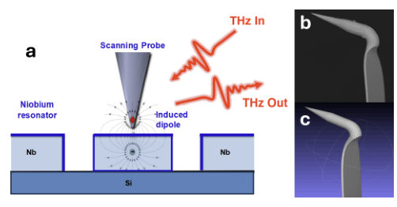
<figcaption class="paper-figure-caption"><b>Fig 1.</b> Figure 1. Schematic of a typical SNOM experiment and cantilever-type AFM tip geometry. (a) Illustration of an ex- perimental THz-SNOM measurement displaying the induced dipole between the scanning polarized AFM tip and a struc- tures surface of a sample below. (b) Scanning Electron Mi- croscopy (SEM) picture of the sharp conical section of a com- mercial AFM tip/cantilever (Rocky Mountain Nanotechnol- ogy 25Pt300B) used for THz sSNOM. (c) 3D STL mesh model recreation of SEM probe picture that can be imported into simulation domains.</figcaption>
</figure>
<figure class="paper-figure-card">
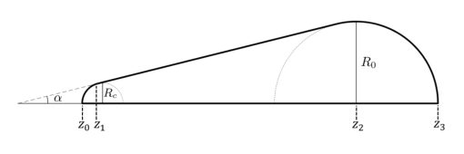
<figcaption class="paper-figure-caption"><b>Fig 2.</b> Figure 2. Outline of the simplified axial-symmetric tip geom- etry model based on SEM images in the (z, ρ)-plane.</figcaption>
</figure>
<figure class="paper-figure-card">
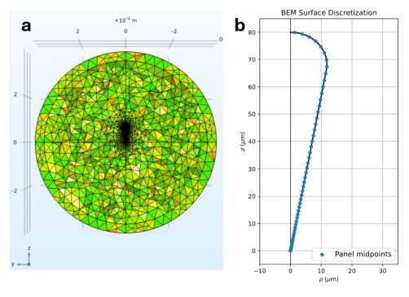
<figcaption class="paper-figure-caption"><b>Fig 3.</b> Figure 3. Mesh comparison between the 3D COMSOL simu- lation and the discretization of the BEM surface model. (a) Volume mesh of quasi-static COMSOL simulation that is set to closely match the BEM definition. (b) Surface discretiza- tion of the BEM method of 100 panels fractionally distributed to the three surface curves.</figcaption>
</figure>
<figure class="paper-figure-card">
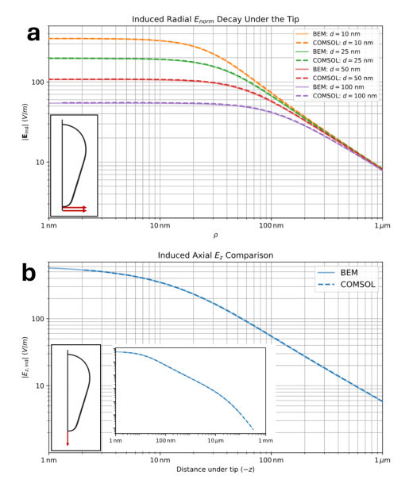
<figcaption class="paper-figure-caption"><b>Fig 4.</b> Figure 4. Radial and Axial induced field decay under the tip apex (Rc = 30nm) comparison. (a) Induced radial decay at varying distances beneath the apex. (b) Induced axial |Ez| decay beneath the apex. The inset plot displays the full data line to show the three decay regions: constant plateau, intermediate region, and dipole behavior ∼1/r3.</figcaption>
</figure>
</div>

<p><strong>Summary.</strong> This paper introduces a Boundary Element Method (BEM) to model the near-field electric field generated by a conducting AFM tip in THz-SNOM. By solving the electrostatics problem on the tip's surface, the authors demonstrate that BEM provides a highly accurate and vastly more computationally efficient alternative to full 3D finite element simulations. This establishes a robust framework for designing and understanding the spatial resolution limits of THz near-field probes.</p>
<p><strong>Why it may be interesting.</strong> While focused on classical electrostatics, the development of highly efficient, accurate boundary element methods for near-field mapping is a crucial computational tool applicable to modeling quantum phenomena where boundary conditions are paramount, such as in quantum electrodynamics or superconducting circuits.</p>
<details>
<summary>Detailed structure</summary>
<p><strong>Main problem.</strong> The paper aims to develop an accurate and computationally efficient method to model the electrostatic near-field response of a conducting Atomic Force Microscopy (AFM) tip in the Terahertz (THz) regime.</p>
<p><strong>Main result.</strong> The developed Boundary Element Method (BEM) accurately reproduces the near-field decay observed in full 3D simulations while achieving substantial reductions in computational cost and mesh elements.</p>
<p><strong>Method.</strong> The authors employ the Boundary Element Method (BEM) to solve the quasi-electrostatic problem, enforcing equipotential and charge neutrality boundary conditions on the tip surface.</p>
<p><strong>Model / system.</strong> The physical system is THz-SNOM, where the tip is modeled as a simplified, axis-symmetric, conducting blunt-cone geometry. The analysis focuses on the electrostatic potential ($\phi$) governed by Poisson's equation.</p>
<p><strong>Key observables.</strong> Near-field decay of the induced electric field ($\vec{E}$), specifically radial and axial decay profiles.</p>
<p><strong>Important parameters / regimes.</strong> THz background field strength ($E_0$), tip geometry parameters (e.g., radii of curvature $R_c, R_0$), and the separation distance between the tip and sample.</p>
<p><strong>Assumptions / limitations.</strong> The model assumes the problem is quasi-electrostatic, simplifies the tip to a blunt-cone shape, and initially excludes tip-sample coupling effects.</p>
<p><strong>Figures summary.</strong> Figures illustrate the THz-SNOM setup, the simplified 3D mesh model of the tip, and comparative plots showing the calculated induced radial and axial electric field decay profiles against full FEM simulations.</p>
<p><strong>Paper structure.</strong> The paper introduces the physical problem, details the mathematical formulation using BEM (including handling singularities and solving the coupled system for potential and charge), validates the BEM against COMSOL FEM simulations, and concludes by demonstrating the computational efficiency of the BEM framework.</p>
</details>
<details>
<summary>Abstract</summary>
<p>Terahertz scanning near-field optical microscopy (THz-SNOM) enables spatially and spectrally resolved investigation of low-energy collective and topological states in quantum materials and nano-structured devices by exploiting the strongly localized near field generated by a polarized atomic force microscopy (AFM) tip. Because the THz near-field response is highly sensitive to tip geometry, understanding how geometric parameters control field confinement and decay is essential for selecting tip designs that provide the spatial resolution required for specific experiments. In this work, we develop a boundary element method (BEM) for modeling the electrostatic near-field of a conducting AFM tip in response to an external background field. The tip is represented by a simplified closed, blunt-cone geometry with its surface discretized into panels using increased mesh density near the apex. A modified Green's function is used to calculate interactions between surface panels, while an augmented linear system simultaneously enforces the equipotential boundary condition on the conducting surface and overall charge neutrality to determine the induced surface-charge distribution. We validate the BEM by comparing the resulting near-field decay with that obtained from a three-dimensional quasi-static COMSOL Multiphysics simulation. The BEM accurately reproduces the COMSOL field-decay behavior while requiring orders of magnitude fewer mesh elements and substantially reducing computational cost. These results demonstrate that the BEM provides an accurate and computationally efficient framework for systematically investigating the dependence of THz near-field confinement on AFM tip geometry. This framework can be extended to more complex and experimentally realistic tip geometries, providing a route toward rational tip selection and design for application-specific spatial-resolution requirements.</p>
</details>
<p><sub><a href="#top">↑ back to top</a></sub></p>

<p><a id="paper-2610.25555"></a></p>
<h3 id="chiral-symmetry-and-the-orbital-susceptibility-of-disordered-honeycomb-flakes"><a href="http://arxiv.org/abs/2610.25555v1">Chiral symmetry and the orbital susceptibility of disordered honeycomb flakes</a></h3>
<p><strong>Authors:</strong> B. Murzaliev<br>
<strong>Type:</strong> theory · <strong>Category:</strong> disordered systems and neural networks · <strong>PDF:</strong> <a href="https://arxiv.org/pdf/2610.25555v1">https://arxiv.org/pdf/2610.25555v1</a><br>
<strong>Analysis basis:</strong> full PDF text, analyzed in chunks
<strong>Topic relevance:</strong> <code>Keldysh / 2PI / non-Gaussian methods</code> <strong>2/5</strong> · <code>analog quantum simulation</code> <strong>1/5</strong></p>
<div class="figure-strip-hint">↔ Scroll figures horizontally</div>
<div class="paper-figures-scroll">
<figure class="paper-figure-card">
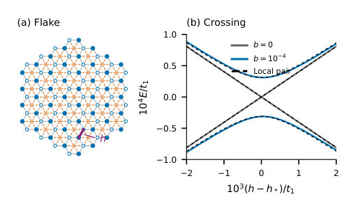
<figcaption class="paper-figure-caption"><b>Fig 1.</b> FIG. 1. A zero-energy pair and its magnetic splitting. (a) A 96-site flake with first-neighbor (gray) and third-neighbor (orange) bonds; filled and open sites mark the two sublattices. (b) Varying the hopping h of the purple bond through its crossing value h∗/t1 ≃1.084 closes the central gap at zero field (gray). A field b = 10−4 opens an avoided crossing (blue). Solid curves show the single-particle energies E near zero; dashed curves show Eq. (4). Here t1 and t3 = 0.2t1 are the first- and third-neighbor hopping scales; all bond factors lie in (0.7, 1.3). The dimensionless field is b = BL2 0/Φ0, with magnetic field B, nearest-neighbor distance L0, and single- electron flux quantum Φ0.</figcaption>
</figure>
<figure class="paper-figure-card">
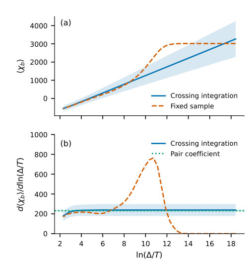
<figcaption class="paper-figure-caption"><b>Fig 2.</b> FIG. 2. Rare pairs control the low-temperature mean re- sponse. (a) Mean susceptibility of neutral 96-site flakes at t3/t1 = 0.4, including all levels. Blue: average obtained by integrating one bond continuously across the small-gap re- gions. Orange dashes: a fixed sample of 20,007 flakes, which misses the smallest gaps and levels off. (b) Logarithmic slope of the blue curve, compared with the coefficient A(0) = 231.5 obtained independently from the crossings (green). Bands: 1.96 standard errors. Here T is temperature, ∆the mean level spacing near zero energy, and energies are in units of the nearest-neighbor hopping t1.</figcaption>
</figure>
<figure class="paper-figure-card">
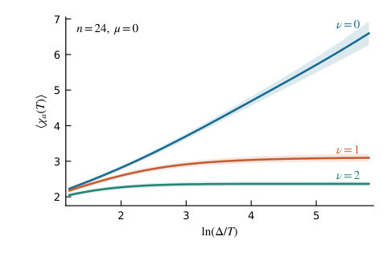
<figcaption class="paper-figure-caption"><b>Fig 3.</b> FIG. 3. Sublattice imbalance removes the logarithm of the random-matrix model. The full mean response ⟨χa(T, 0)⟩ grows for ν = 0 and saturates for ν = 1, 2, where ν counts protected zero modes. All curves use n = 24 positive levels, µ = 0, Gaussian energy unit E0 = 1, and reference spacing ∆= π/(2n). Each curve averages 6,000 independent matri- ces, with the average over Y taken analytically; bands give pointwise 95% bootstrap intervals.</figcaption>
</figure>
<figure class="paper-figure-card">
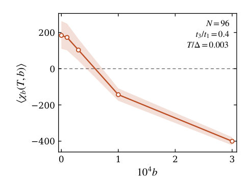
<figcaption class="paper-figure-caption"><b>Fig 4.</b> FIG. 4. A magnetic field reverses the sign of the response. Mean differential susceptibility χb = −∂2 b Ω, evaluated at the field b and including all levels, for 20,007 neutral 96-site flakes with t3/t1 = 0.4 at T = 0.003∆; the same flakes enter ev- ery field. Band: pointwise 95% bootstrap interval. Here b = BL2 0/Φ0, with magnetic field B, nearest-neighbor dis- tance L0, and flux quantum Φ0; for L0 = 0.142 nm, b = 10−4</figcaption>
</figure>
</div>

<p><strong>Summary.</strong> This theoretical work determines the mean orbital susceptibility of disordered honeycomb flakes, finding that chiral symmetry leads to a characteristic logarithmic divergence in the susceptibility at low temperatures. This divergence is critically dependent on the hopping geometry allowing the energy gap to close, and it is suppressed if the sublattices are imbalanced.</p>
<p><strong>Why it may be interesting.</strong> The study of singular, temperature-dependent responses in disordered lattices is highly relevant to understanding transport in mesoscopic systems, which shares conceptual links with localization phenomena studied in disordered systems.</p>
<details>
<summary>Detailed structure</summary>
<p><strong>Main problem.</strong> The paper investigates the low-temperature mean orbital susceptibility of disordered honeycomb flakes, focusing on how chiral symmetry influences its temperature dependence.</p>
<p><strong>Main result.</strong> The mean susceptibility exhibits a logarithmic divergence ($\propto \ln(1/T)$) when chiral symmetry is present and specific hopping terms (like third-neighbor bonds) allow the gap to close. This divergence is suppressed by sublattice imbalance.</p>
<p><strong>Method.</strong> The analysis employs theoretical techniques involving disorder averaging, random-matrix theory (RMT), and calculating pair contributions to the susceptibility.</p>
<p><strong>Model / system.</strong> The system is a disordered honeycomb flake modeled by a Hamiltonian exhibiting chiral (sublattice) symmetry. The analysis uses random-matrix ensembles and considers the effect of hopping geometry (nearest-neighbor vs. third-neighbor) on the gap structure.</p>
<p><strong>Key observables.</strong> Mean orbital susceptibility ($\langle\chi
angle$), which shows logarithmic growth $\propto \ln(1/T)$ under specific conditions.</p>
<p><strong>Important parameters / regimes.</strong> Temperature ($T$), disorder strength ($w$ or $v$), sublattice imbalance ($
u$), and the ratio of hopping amplitudes ($t_3/t_1$).</p>
<p><strong>Assumptions / limitations.</strong> The analysis assumes the system can be described by chiral random-matrix ensembles and relies on the existence of zero-energy crossings to induce the logarithmic divergence.</p>
<p><strong>Figures summary.</strong> Figures compare the temperature dependence of the mean susceptibility, showing logarithmic growth for balanced sublattices ($
u=0$) and saturation for imbalanced ones ($
u&gt;0$).</p>
<p><strong>Paper structure.</strong> The paper progresses from general susceptibility definitions to specific calculations using pair contributions, establishing the logarithmic divergence based on gap closings, and finally analyzing the role of sublattice imbalance and external fields.</p>
</details>
<details>
<summary>Abstract</summary>
<p>The orbital susceptibility of a small disordered grain is dominated by rare samples in which an occupied and an empty level nearly touch. In a chaotic grain such near-degeneracies are suppressed by level repulsion and must also coincide with the chemical potential, so the mean susceptibility stays finite. In a neutral honeycomb flake, chiral (sublattice) symmetry removes the second condition: It places the chemical potential in the middle of the smallest gap, in every disorder realization. Here we show that the mean orbital susceptibility then grows as $\ln(1/T)$ at low temperature $T$ if disorder can close this gap while a magnetic field still mixes the two levels, and that the hopping geometry decides whether it can: Positive nearest-neighbor hopping on a compact hexagonal flake keeps the gap open, third-neighbor hopping allows it to close. In a chiral random-matrix model with $n$ level pairs the coefficient of the logarithm is $C_n=\sqrt{2/n}\,Γ[(n+1)/2]/Γ(n/2)$, close to unity, and a detuned chemical potential cuts the logarithm off.</p>
</details>
<p><sub><a href="#top">↑ back to top</a></sub></p>

<p><a id="paper-2610.26264"></a></p>
<h3 id="time-reversal-symmetry-breaking-in-the-centrosymmetric-nonsymmorphic-superconductor-rub2"><a href="http://arxiv.org/abs/2610.26264v1">Time-Reversal Symmetry Breaking in the Centrosymmetric Nonsymmorphic Superconductor RuB2</a></h3>
<p><strong>Authors:</strong> Ritu Gupta, Reena, Dibyendu Samanta, Jaskaran Singh, Thomas J. Hicken, Hubertus Luetkens, Jonas Krieger, Sudeep Kumar Ghosh, Yogesh Singh<br>
<strong>Type:</strong> both · <strong>Category:</strong> other · <strong>PDF:</strong> <a href="https://arxiv.org/pdf/2610.26264v1">https://arxiv.org/pdf/2610.26264v1</a><br>
<strong>Analysis basis:</strong> full PDF text, analyzed in chunks
<strong>Topic relevance:</strong> <code>quantum measurements</code> <strong>2/5</strong></p>
<div class="figure-strip-hint">↔ Scroll figures horizontally</div>
<div class="paper-figures-scroll">
<figure class="paper-figure-card">
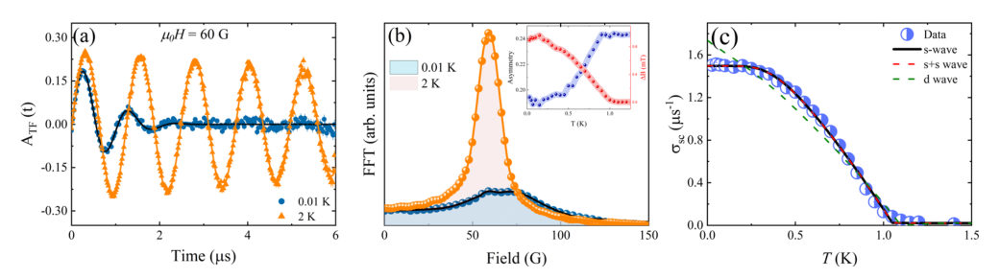
<figcaption class="paper-figure-caption"><b>Fig 1.</b> FIG. 1. TF-µSR Response of RuB2: (a) TF-µSR time spectra of RuB2 measured above Tc (orange symbols) and below Tc (blue symbols) in applied field of 60 G. The solid lines represent fits to the data as described in Supplementary Material (SM). (b) Corresponding Fourier transforms of the TF-µSR spectra above and below Tc. A sharp peak is observed around 60 G above Tc, while below Tc the peak broadens and exhibits a positive shift, indicating an increase in the internal magnetic field sensed by the muons in the superconducting state. The inset shows the temperature dependence of the internal field shift, ∆B = Bint −Bext, and the asymmetry associated with the sample signal. (c) Temperature...</figcaption>
</figure>
<figure class="paper-figure-card">
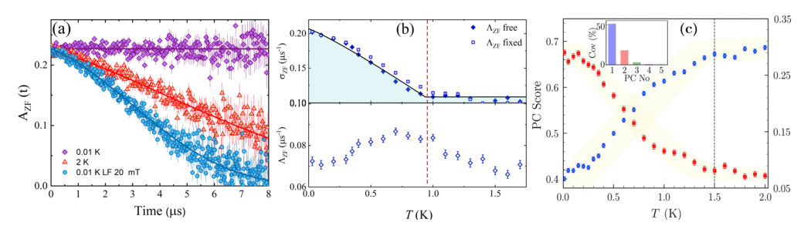
<figcaption class="paper-figure-caption"><b>Fig 2.</b> FIG. 2. Spontaneous Internal Fields in RuB2: (a) ZF-µSR spectra of RuB2 measured at 0.01 K (below Tc, blue symbols) and 2 K (above Tc, red symbols), showing a clear change in the relaxation rate across the superconducting transition. The enhanced relaxation below Tc indicates the emergence of spontaneous internal magnetic fields, suggesting TRSB. The violet symbols represent measurements performed under an applied longitudinal field of 20 mT, where the relaxation is significantly suppressed, indicating the static/quasi-static nature of the internal fields. (b) Temperature dependence of the relaxation rate obtained from fitting the ZF-µSR data. The relaxation rate increases with decreasing...</figcaption>
</figure>
<figure class="paper-figure-card">
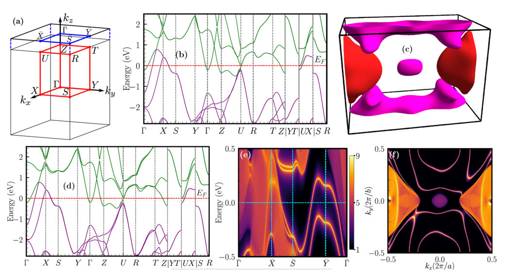
<figcaption class="paper-figure-caption"><b>Fig 3.</b> FIG. 3. Electronic band structure, and band topology of RuB2: (a) Bulk Brillouin zone corresponding to the primitive orthorhombic lattice, including (001) surface Brillouin zone. (b) Electronic band structure calculated without spin-orbit coupling (SOC). (c) Combined Fermi surface sheets of RuB2, highlighting three Fermi sheets spanning the Brillouin zone. (d) Electronic band structure with SOC included, showing SOC-induced band splitting. (e) Surface spectral function along high-symmetry paths of the (001) surface BZ, revealing multiple topological surface states. (f) Constant-energy surface spectrum in the vicinity of the Fermi level.</figcaption>
</figure>
</div>

<p><strong>Summary.</strong> This work uses muon spin relaxation and DFT calculations to probe the superconducting state of RuB2. It provides direct evidence for Time-Reversal Symmetry Breaking and suggests the superconducting state is unconventional, likely involving a complex, multiband spin-triplet pairing mechanism. The findings establish RuB2 as a key platform for studying superconductivity driven by crystal symmetry and topology.</p>
<p><strong>Why it may be interesting.</strong> The investigation links symmetry breaking (TRSB) and topological electronic structure to unconventional superconductivity, which is a major theme in modern condensed matter theory, particularly relevant for understanding pairing mechanisms beyond simple BCS theory.</p>
<details>
<summary>Detailed structure</summary>
<p><strong>Main problem.</strong> The paper investigates the unresolved microscopic nature of the superconducting ground state in the centrosymmetric nonsymmorphic boride superconductor, RuB2.</p>
<p><strong>Main result.</strong> The combined evidence from zero-field and transverse-field muon spin relaxation, alongside electronic structure calculations, strongly suggests that RuB2 exhibits unconventional superconductivity characterized by Time-Reversal Symmetry Breaking (TRSB) and a complex, multiband superconducting order parameter.</p>
<p><strong>Method.</strong> The study employs a combination of experimental techniques, specifically zero- and transverse-field muon spin relaxation (muSR), with theoretical tools including first-principles electronic structure calculations and Ginzburg-Landau symmetry analysis.</p>
<p><strong>Model / system.</strong> The physical system is RuB2, an orthorhombic, centrosymmetric nonsymmorphic $   ext{AB}_2$ boride. The theoretical framework involves analyzing the superconducting order parameter symmetry, suggesting an internally antisymmetric, nonunitary spin-triplet state.</p>
<p><strong>Key observables.</strong> Spontaneous internal magnetic fields (from zero-field $\mu$SR), superconducting depolarization rate $\sigma_{sc}(T)$ (from transverse-field $\mu$SR), and the electronic band structure (from DFT calculations).</p>
<p><strong>Important parameters / regimes.</strong> Critical temperature ($T_c \approx 1.6 	ext{ K}$), applied magnetic fields ($\mu_0H_{	ext{app}} = 60 	ext{ G}$), and superconducting gap ratios ($\Delta_0/k_B T_c \approx 1.63$).</p>
<p><strong>Assumptions / limitations.</strong> The analysis assumes that the observed phenomena can be explained by the interplay of crystal symmetry, multiband electronic structure, and spin-orbit coupling, although the order parameter is not uniquely determined.</p>
<p><strong>Figures summary.</strong> Figures illustrate the time spectra and Fourier transforms from TF-$\mu$SR, the temperature dependence of the superconducting depolarization rate fitted to various gap models, and the temperature dependence of the internal field shift from ZF-$\mu$SR.</p>
<p><strong>Paper structure.</strong> The paper follows a structure of presenting experimental diagnostics (muSR measurements for TRSB and gap characterization), complementing these with theoretical calculations (DFT for electronic structure), and synthesizing these results using symmetry analysis (Ginzburg-Landau) to propose a candidate superconducting order parameter.</p>
</details>
<details>
<summary>Abstract</summary>
<p>Centrosymmetric nonsymmorphic AB2 (A = Ru, Os) borides exhibit anomalous superconducting properties, but the microscopic nature of their superconducting ground state remains unresolved. Here, we investigate RuB2 using zero- and transverse-field muon spin relaxation (muSR), first-principles electronic-structure calculations, and Ginzburg-Landau symmetry analysis. Zero-field muSR reveals spontaneous internal magnetic fields below Tc = 1.6 K, providing direct evidence for time-reversal symmetry breaking (TRSB). Transverse-field measurements establish a fully gapped superconducting state, with a gap magnitude close to the BCS weak-coupling limit. Density-functional calculations show that RuB2 is a multiband Z2 topological metal with appreciable spin-orbit coupling. Guided by the experimental observations and the symmetry of the orthorhombic crystal structure, our Ginzburg-Landau analysis suggests that an internally antisymmetric, nonunitary spin-triplet state is a promising candidate for the superconducting order parameter. This candidate is consistent with both the observed TRSB and the fully gapped superconducting state. These results establish RuB2 as a promising platform for investigating unconventional superconductivity arising from the interplay of crystal symmetry, multiband electronic structure, and spin-orbit coupling, and motivate further studies of related nonsymmorphic borides. The two muSR measurements provide complementary constraints: zero-field data probe spontaneous magnetism associated with TRSB, while transverse-field data characterize superconducting field distribution and support a full gap. The topological electronic structure and spin-orbit coupling provide context for unconventional pairing. Although these results do not uniquely determine the order parameter, they narrow candidates and highlight that nonsymmorphic symmetry may shape superconductivity in RuB2.</p>
</details>
<p><sub><a href="#top">↑ back to top</a></sub></p>

<p><a id="paper-2610.24967"></a></p>
<h3 id="topological-splitting-of-sondheimer-oscillations-in-thin-film-weyl-semimetals"><a href="http://arxiv.org/abs/2610.24967v1">Topological Splitting of Sondheimer Oscillations in Thin-Film Weyl Semimetals</a></h3>
<p><strong>Authors:</strong> Toshihito Osada<br>
<strong>Type:</strong> theory · <strong>Category:</strong> other · <strong>PDF:</strong> <a href="https://arxiv.org/pdf/2610.24967v1">https://arxiv.org/pdf/2610.24967v1</a><br>
<strong>Analysis basis:</strong> full PDF text, analyzed in chunks
<strong>Topic relevance:</strong> <code>Keldysh / 2PI / non-Gaussian methods</code> <strong>2/5</strong></p>
<div class="figure-strip-hint">↔ Scroll figures horizontally</div>
<div class="paper-figures-scroll">
<figure class="paper-figure-card">
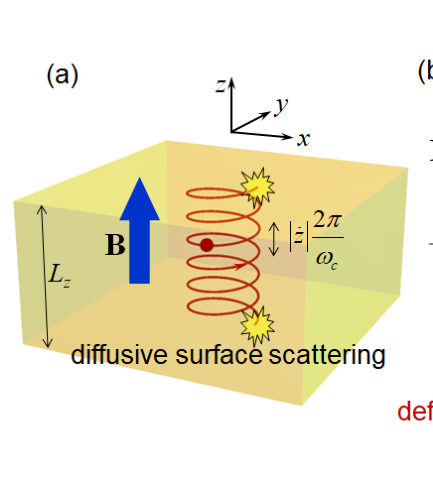
<figcaption class="paper-figure-caption"><b>Fig 1.</b> FIG. 1. (color online)</figcaption>
</figure>
<figure class="paper-figure-card">
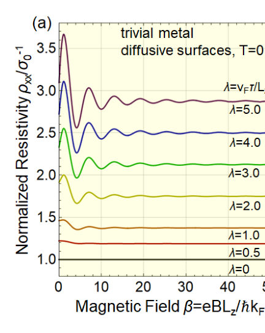
<figcaption class="paper-figure-caption"><b>Fig 2.</b> FIG. 2. (color online)</figcaption>
</figure>
<figure class="paper-figure-card">
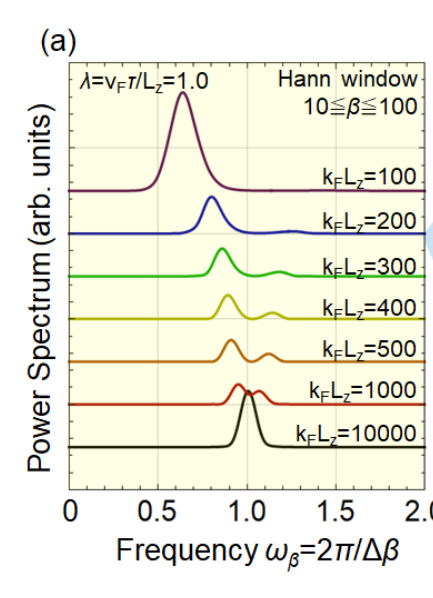
<figcaption class="paper-figure-caption"><b>Fig 3.</b> FIG. 3. (color online)</figcaption>
</figure>
</div>

<p><strong>Summary.</strong> This theoretical work analyzes how topological properties, specifically the Berry curvature in Weyl semimetals, alter the standard Sondheimer oscillations in magnetoresistance. The key finding is that these oscillations split into two distinct, chirping branches due to the orbital-Zeeman-induced deformation of the Fermi surface. This provides a measurable signature of topological physics in transport measurements.</p>
<p><strong>Why it may be interesting.</strong> While focused on condensed matter transport, the study of topological band structures and their observable signatures (like the splitting/chirping) provides a theoretical framework for understanding how Berry curvature manifests in macroscopic transport measurements, which is relevant to topological quantum materials research.</p>
<details>
<summary>Detailed structure</summary>
<p><strong>Main problem.</strong> The paper investigates how topological effects modify the characteristic Sondheimer oscillations (SOs) observed in the magnetoresistance of thin-film Weyl semimetals.</p>
<p><strong>Main result.</strong> The topological correction causes the SOs to split into two distinct branches, and furthermore, each branch exhibits a 'chirp' where its frequency depends on the applied magnetic field.</p>
<p><strong>Method.</strong> The analysis employs Boltzmann transport theory, incorporating semiclassical dynamics and calculating the oscillatory contributions to conductivity and resistivity.</p>
<p><strong>Model / system.</strong> The system is a thin-film Weyl semimetal, modeled using a Hamiltonian describing a single isotropic Weyl cone. The key physics involves the coupling between electron motion and the Berry curvature, leading to an orbital Zeeman effect that deforms the Fermi surface.</p>
<p><strong>Key observables.</strong> Transverse magnetoresistance ($
ho_{xx}$), the oscillatory component ($\delta
ho_{xx}$), and the frequency separation/chirp observed in Fourier power spectra.</p>
<p><strong>Important parameters / regimes.</strong> The dimensionless topological parameter $b_k = eB/(k\Omega\hbar)$, the film thickness ($L$), and the Fermi wavevector ($k_F$).</p>
<p><strong>Assumptions / limitations.</strong> Assumes constant bulk relaxation time ($ au$) and completely diffusive surface scattering. Calculations are performed retaining terms up to first order in $b_k$.</p>
<p><strong>Figures summary.</strong> Figures show the origin of SOs via commensurability, the deformed Fermi surface, and numerical results demonstrating the splitting of the oscillation peak into two components whose separation increases with the magnetic field (chirping).</p>
<p><strong>Paper structure.</strong> The paper builds from the physical origin of SOs, develops the theoretical framework using Boltzmann transport theory modified by topological terms, derives the resulting oscillatory behavior, and concludes with numerical verification of the splitting and chirping effects.</p>
</details>
<details>
<summary>Abstract</summary>
<p>We discuss topological effects on Sondheimer oscillations in the magnetoresistance of thin-film Weyl semimetals. The Sondheimer oscillations are periodic in magnetic field and originate from the commensurability between the film thickness and the cyclotron-orbit pitch. Using Boltzmann transport theory, we investigate the effects of Berry curvature and orbital magnetic moment on the oscillations. We find that the Sondheimer oscillations split into two branches with different frequencies and that each branch becomes chirped because its frequency depends on magnetic field. These features originate from the orbital-Zeeman-induced deformation of the Fermi surface. The same mechanism also applies to Dirac semimetals.</p>
</details>
<p><sub><a href="#top">↑ back to top</a></sub></p>

<p><a id="paper-2610.26715"></a></p>
<h3 id="proximity-transient-absorption-in-van-der-waals-heterostructures"><a href="http://arxiv.org/abs/2610.26715v1">Proximity Transient Absorption in van der Waals Heterostructures</a></h3>
<p><strong>Authors:</strong> Neema Rafizadeh, Ting Zheng, Hui Zhao<br>
<strong>Type:</strong> experiment · <strong>Category:</strong> other · <strong>PDF:</strong> <a href="https://arxiv.org/pdf/2610.26715v1">https://arxiv.org/pdf/2610.26715v1</a><br>
<strong>Analysis basis:</strong> full PDF text, analyzed in chunks
<strong>Topic relevance:</strong> <code>Keldysh / 2PI / non-Gaussian methods</code> <strong>1/5</strong> · <code>correlated / nonlocal dissipation</code> <strong>1/5</strong> · <code>driven-dissipative phase transition</code> <strong>1/5</strong> · <code>methods for driven-dissipative</code> <strong>1/5</strong> · <code>non-equilibrium universality</code> <strong>1/5</strong> · <code>quantum measurements</code> <strong>1/5</strong></p>
<div class="figure-strip-hint">↔ Scroll figures horizontally</div>
<div class="paper-figures-scroll">
<figure class="paper-figure-card">
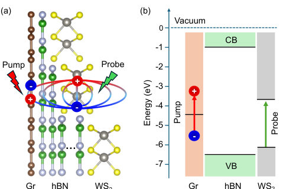
<figcaption class="paper-figure-caption"><b>Fig 1.</b> FIG. 1. Schematic illustration of proximity transient ab- sorption (PTA). (a) Graphene and WS2 monolayers are sep- arated by a thin hexagonal boron nitride (hBN) layer. A pump pulse generates electron–hole pairs in graphene. The resulting carriers induce Coulomb screening across the hBN spacer, modifying the excitonic resonance of the nearby WS2 layer. The transient change in the WS2 optical response is detected by a probe pulse resonant with the exciton transi- tion. (b) Schematic band alignment and optical transitions in the Gr/hBN/WS2 heterostructure.</figcaption>
</figure>
<figure class="paper-figure-card">
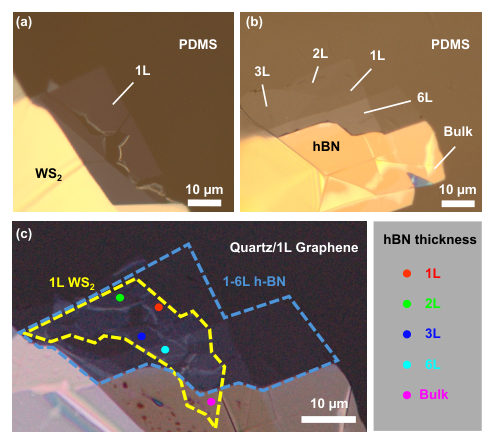
<figcaption class="paper-figure-caption"><b>Fig 2.</b> FIG. 2. Optical microscope images of the samples. (a) A WS2 flake exfoliated onto a polydimethylsiloxane (PDMS) substrate, containing a large monolayer (1L) region. (b) An hBN flake exfoliated onto a PDMS substrate, containing re- gions of different thicknesses, as labeled, determined from their optical contrast. (c) The Gr/hBN/WS2 heterostruc- ture fabricated by first transferring the hBN flake onto CVD monolayer graphene on a quartz substrate, followed by trans- fer of the 1L WS2 flake. Colored dots indicate the regions with different hBN thicknesses and location and size of laser spots in optical measurements.</figcaption>
</figure>
<figure class="paper-figure-card">
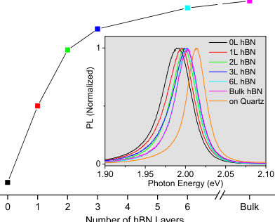
<figcaption class="paper-figure-caption"><b>Fig 3.</b> FIG. 3. Photoluminescence (PL) spectroscopy. The inset shows normalized PL spectra measured from different regions of the heterostructure sample and from a monolayer WS2 sam- ple on quartz. The main panel shows the WS2 PL peak energy as a function of the hBN layer number.</figcaption>
</figure>
<figure class="paper-figure-card">
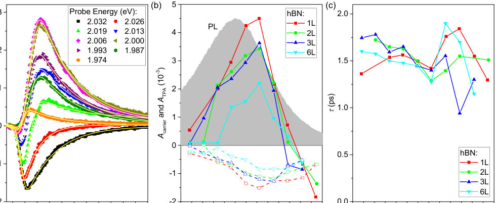
<figcaption class="paper-figure-caption"><b>Fig 4.</b> FIG. 4. Proximity transient absorption spectroscopy. (a) Time-resolved differential reflectance of the Gr/1L-hBN/WS2 het- erostructure measured at various probe photon energies, as labeled. The yellow curves are fits to the data (see text). (b) Contributions from carrier-induced transient absorption (Acarrier, solid red squares) and two-photon absorption (ATPA, open red squares) deduced from the fits shown in (a). The PL spectrum is replotted for comparison (shaded area). The values of Acarrier and ATPA obtained from heterostructures with hBN thicknesses of 2L (green), 3L (blue), and 6L (cyan) are also shown. (c) Decay time constants deduced from fits of all four heterostructure samples.</figcaption>
</figure>
<figure class="paper-figure-card">
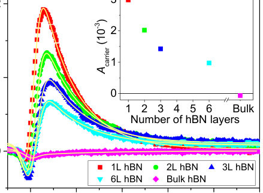
<figcaption class="paper-figure-caption"><b>Fig 5.</b> FIG. 5. Time-resolved differential reflectance measured for samples with different hBN thicknesses, with pump and probe photon energies of 1.512 and 2.010 eV, respectively. The yel- low curves are fits to the data using the model described in the text. The inset shows the amplitude of the carrier-induced transient absorption signal as a function of hBN thickness.</figcaption>
</figure>
</div>

<p><strong>Summary.</strong> This work introduces Proximity Transient Absorption (PTA) spectroscopy to study electronic interactions in van der Waals heterostructures like graphene/hBN/WS2. By exciting carriers in one material, the technique measures the resulting transient optical signal in a neighboring, electronically isolated material. This confirms that the exciton in the probed layer acts as an optical transducer for processes occurring in the pump layer.</p>
<p><strong>Why it may be interesting.</strong> PTA provides a noncontact, all-optical method to probe carrier dynamics in spatially separated quantum materials, which is highly relevant for understanding open quantum systems and charge transfer dynamics at interfaces.</p>
<details>
<summary>Detailed structure</summary>
<p><strong>Main problem.</strong> The study investigates transient optical signals in van der Waals (vdW) heterostructures where the probed optical transition and the photoexcited carriers reside in different, electronically isolated materials.</p>
<p><strong>Main result.</strong> Proximity Transient Absorption (PTA) demonstrates that photoexcited carriers in one material (e.g., graphene) can induce a measurable transient optical response at the excitonic resonance of a neighboring, electronically isolated material (e.g., WS2).</p>
<p><strong>Method.</strong> The technique uses time-resolved transient absorption spectroscopy (pump-probe setup) to measure the differential reflectance ($\Delta R/R_0$) as a function of time delay.</p>
<p><strong>Model / system.</strong> The system studied is the graphene/hBN/WS2 heterostructure, where the atomically thin hBN spacer is crucial for maintaining electronic isolation between the layers.</p>
<p><strong>Key observables.</strong> Transient optical signal magnitude ($  ext{A}_{    ext{carrier}}$) at the $    ext{WS}_2$ exciton resonance, carrier lifetime ($   au$), and the systematic decrease of the signal with increasing hBN thickness.</p>
<p><strong>Important parameters / regimes.</strong> hBN spacer thickness (ranging from few layers to bulk), excitation fluence, and the time delay between pump and probe pulses.</p>
<p><strong>Assumptions / limitations.</strong> The electronic isolation is maintained by the hBN spacer, which acts as a large barrier, and the signal is assumed to originate from proximity effects rather than direct electronic coupling.</p>
<p><strong>Figures summary.</strong> Figures illustrate the PTA setup, PL shifts confirming dielectric screening dependence on hBN thickness, and time-resolved differential reflectance measurements showing the proximity-induced signal decay.</p>
<p><strong>Paper structure.</strong> The paper establishes PTA as a new spectroscopic modality, details the $   ext{Gr}/    ext{hBN}/   ext{WS}_2$ system, presents measurements showing the proximity effect dependence on spacer thickness, and discusses the implications for optically modulating separated layers.</p>
</details>
<details>
<summary>Abstract</summary>
<p>Transient absorption spectroscopy is a widely used technique for investigating ultrafast electronic dynamics, where transient optical signals are generally interpreted as arising from excitations within the material hosting the probed optical transition. A distinct form of transient absorption spectroscopy, termed proximity transient absorption (PTA), is demonstrated, in which the probed optical transition and the monitored photoexcited carriers reside in different materials. Using graphene/hBN/WS$_2$ heterostructures, photoexcited carriers in graphene induce a strong transient optical response at the excitonic resonance of a WS$_2$ monolayer through Coulomb screening, even when the two layers remain electronically isolated by an atomically thin hBN spacer. The resulting signal follows the carrier dynamics of graphene rather than those of WS$_2$, demonstrating that the WS$_2$ exciton acts as an optical transducer of electronic processes in a neighboring material. The signal decreases systematically with increasing hBN thickness, confirming its proximity origin while remaining substantial for separations approaching 2 nm. PTA provides a noncontact approach for optically modulating one material using photoexcited carriers in another and enables probing of carrier dynamics in materials that are otherwise difficult to investigate directly. More broadly, PTA establishes a new modality of ultrafast spectroscopy and reveals that transient optical signals in van der Waals heterostructures can originate from excitations residing in spatially separated layers.</p>
</details>
<p><sub><a href="#top">↑ back to top</a></sub></p>

<p><a id="paper-2610.26611"></a></p>
<h3 id="stabilization-of-ferroelectric-domains-via-interfacial-strain-in-hofeo3-batio3-nanofiber-heterostructures-for-enhanced-hybrid-energy-harvesting"><a href="http://arxiv.org/abs/2610.26611v1">Stabilization of Ferroelectric Domains via Interfacial Strain in HoFeO3- BaTiO3 Nanofiber Heterostructures for Enhanced Hybrid Energy Harvesting</a></h3>
<p><strong>Authors:</strong> Smita Chaturvedi, Swathi Krishna, Shivshankar Jokare, Supriya Sahoo, Vikash Kushwaha, Priyank Shyam, Mandar Shirolkar, R. Boomishankar<br>
<strong>Type:</strong> experiment · <strong>Category:</strong> other · <strong>PDF:</strong> <a href="https://arxiv.org/pdf/2610.26611v1">https://arxiv.org/pdf/2610.26611v1</a><br>
<strong>Analysis basis:</strong> full PDF text, analyzed in chunks
<strong>Topic relevance:</strong> <code>analog quantum simulation</code> <strong>1/5</strong> · <code>correlated / nonlocal dissipation</code> <strong>1/5</strong> · <code>driven-dissipative phase transition</code> <strong>1/5</strong> · <code>non-equilibrium universality</code> <strong>1/5</strong> · <code>quantum measurements</code> <strong>1/5</strong></p>
<div class="figure-strip-hint">↔ Scroll figures horizontally</div>
<div class="paper-figures-scroll">
<figure class="paper-figure-card">
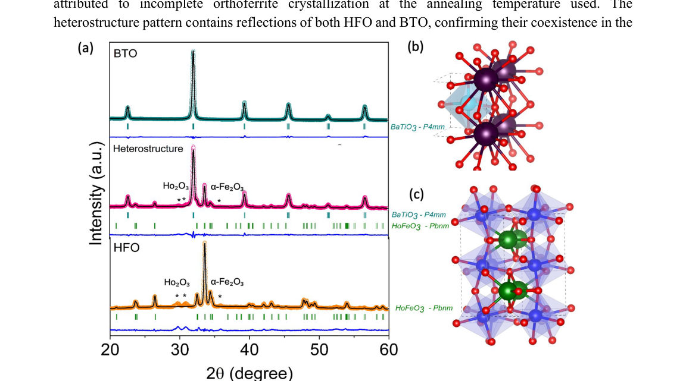
<figcaption class="paper-figure-caption"><b>Fig 1.</b> Figure 1. (a) Rietveld-refined XRD patterns of BTO, the HFO-BTO heterostructure, and HFO nanofibers (offset for clarity). Vertical tick marks indicate allowed reflections for tetragonal BaTiO3 (P4mm) and orthorhombic HoFeO3 (Pbnm); asterisks (*) denote trace Ho2O3 and α-Fe2O3 secondary- phase reflections. (b) Polyhedral crystal structure of tetragonal BaTiO3 (P4mm), showing the off- center displacement of Ti4+ within the TiO6 octahedron. (c) Crystal structure of orthorhombic HoFeO3 (Pbnm), with corner-sharing FeO6 octahedra and Ho3+ in the distorted A-site cavity (effectively eight- coordinate).</figcaption>
</figure>
<figure class="paper-figure-card">

<figcaption class="paper-figure-caption"><b>Fig 2.</b> Figure 2. Calculated valence charge-density maps for (left to right) bulk HFO, the HFO|HFO-BTO interface, the BTO|HFO-BTO interface, and bulk BTO, viewed along the (100) and (010) projections. The pronounced accumulation of charge density in the Ti-O bond region at the heterointerface (compared with bulk BTO) indicates strengthened Ti 3d-O 2p hybridization at the interface.</figcaption>
</figure>
<figure class="paper-figure-card">

<figcaption class="paper-figure-caption"><b>Fig 3.</b> Figure 3. TEM, HRTEM, SAED, and EDS elemental mapping of (a) HoFeO3, (b) BaTiO3, and (c) HFO-BTO heterostructure nanofibers. HRTEM panels (a2, b2, c2) show lattice fringes indexed to the respective phases; (a3, b3, c3, c4) are SAED patterns confirming crystallinity and coherent dual-phase integration; (a4, b4, c5) are EDS elemental maps (Ho, Fe, O for HFO; Ba, Ti, O for BTO; all five elements for HFO-BTO) demonstrating uniform composition and successful heterostructure formation.</figcaption>
</figure>
<figure class="paper-figure-card">

<figcaption class="paper-figure-caption"><b>Fig 4.</b> Figure 4. (Top) Deconvoluted Raman spectra of HFO, HFO-BTO heterostructure, and BTO nanofibers, with phase-wise mode assignment indicated. (Bottom) Schematic eigen-displacement patterns of the principal FeO6 (left) and TiO6 (right) vibrational modes, illustrating the atomic motions responsible for the observed peaks. Systematic shifts in the heterostructure spectra relative to single- phase references evidence interfacial strain-induced lattice distortion.</figcaption>
</figure>
<figure class="paper-figure-card">

<figcaption class="paper-figure-caption"><b>Fig 5.</b> Figure 5. Magnetization-field (M-H) loops of BTO, HFO, and HFO-BTO nanofibers at (a) 300 K and (c) 5 K, with magnified low-field views (b) and (d) highlighting the weak ferromagnetic hysteresis. The heterostructure retains a robust orthoferrite-derived hysteresis loop, confirming structural integrity of the FeO6 framework after co-annealing.</figcaption>
</figure>
</div>

<p><strong>Summary.</strong> This research reports on enhancing energy harvesting by creating HoFeO3-BaTiO3 nanofiber heterostructures. By engineering the interface between the two ferroelectric oxides, the researchers induced lattice strain that stabilized the ferroelectric domains. This resulted in a hybrid nanogenerator that achieved significantly higher power density by combining piezoelectric and triboelectric energy conversion.</p>
<p><strong>Why it may be interesting.</strong> While primarily materials science, the study of strain-induced phase stabilization and the coupling of multiple physical effects (piezoelectric, ferroelectric, triboelectric) at interfaces is relevant to understanding complex, non-linear energy conversion systems, which can sometimes be modeled using advanced open quantum system approaches.</p>
<details>
<summary>Detailed structure</summary>
<p><strong>Main problem.</strong> To develop efficient, self-powered mechanical-energy harvesting devices by improving the performance of piezoelectric nanogenerators (PENGs).</p>
<p><strong>Main result.</strong> The HFO-BTO heterostructure significantly enhanced the power density (24.31 µW cm-3) compared to single-phase materials, demonstrating that interface-driven lattice distortion is key to improved electromechanical output.</p>
<p><strong>Method.</strong> The study involved synthesizing HFO-BTO nanofibers via alternating sol-gel electrospinning, characterizing them structurally (XRD, TEM), and testing them as hybrid nanogenerators under cyclic mechanical impact.</p>
<p><strong>Model / system.</strong> The physical system is the HoFeO3-BaTiO3 (HFO-BTO) nanofiber heterostructure, which is fabricated into a nanogenerator and encapsulated in PDMS. The performance relies on the coupling between the piezoelectric effect (from strained BaTiO3) and the triboelectric effect.</p>
<p><strong>Key observables.</strong> Open-circuit voltage peaks (+6 V and -8 V), power density (24.31 µW cm-3), polarization-electric field loops, and interfacial lattice distortion.</p>
<p><strong>Important parameters / regimes.</strong> The ratio of HFO to BTO phases, the applied mechanical strain/impact frequency, and the resulting coercive field strength.</p>
<p><strong>Assumptions / limitations.</strong> The total energy output is modeled as a hybrid sum of the piezoelectric contribution (from strained BaTiO3) and the triboelectric contribution (from contact electrification).</p>
<p><strong>Figures summary.</strong> Figures likely show XRD patterns confirming phase formation, TEM images showing dual-phase integration, and electrical characterization plots (e.g., Power density vs. load resistance) comparing HFO, BTO, and HFO-BTO devices.</p>
<p><strong>Paper structure.</strong> The paper follows a structure of problem identification (PENG limitations), material engineering (HFO-BTO synthesis and characterization), mechanism elucidation (interface strain stabilizing ferroelectric domains), and final device testing/performance benchmarking.</p>
</details>
<details>
<summary>Abstract</summary>
<p>Piezoelectric nanogenerators (PENGs) are an attractive platform for self-powered mechanical-energy harvesting, but their output is often limited by depolarization fields, charge leakage, and inefficient stress transfer to the active dipoles, particularly in polymer-dominated composites. Here we report HoFeO3-BaTiO3 (HFO-BTO) nanofiber heterostructures prepared by alternating sol-gel electrospinning, in which orthorhombic HoFeO3 (Pbnm) and tetragonal BaTiO3 (P4mm) coexist in intimate contact. Rietveld-refined X-ray diffraction, high-resolution transmission electron microscopy, and Raman spectroscopy indicate interfacial lattice distortion. Polarization-electric field loops show that the heterostructure retains a polarization comparable to that of BaTiO3 (16.39 vs 15.80 microcoulombs per square centimeter at zero field) while its switching-current maximum moves to a higher field (about 7 vs about 3.5 kilovolts per centimeter), consistent with strain-stabilized ferroelectric domains. When the nanofibers are encapsulated in polydimethylsiloxane (PDMS) and excited under cyclic impact, the device produces a hybrid output: the piezoelectric response of the strained BaTiO3 is supplemented by a triboelectric contribution from contact electrification. The HFO-BTO device delivers open-circuit voltage peaks of about +6 volts and -8 volts and a power density of 24.31 microwatts per cubic centimeter at a 4.7 megaohm load. This is 2.4 times the value for an identically fabricated BaTiO3 device (10.00 microwatts per cubic centimeter) and 8.7 times that of the HoFeO3 device (2.78 microwatts per cubic centimeter). These results link interface-driven lattice distortion to improved electromechanical output and identify all-oxide nanofiber heterostructures as a promising route to lead-free energy harvesting.</p>
</details>
<p><sub><a href="#top">↑ back to top</a></sub></p>

<p><a id="paper-2610.24768"></a></p>
<h3 id="epitaxial-displacement-etched-gaassb-quantum-dots-emitting-at-telecom-wavelengths"><a href="http://arxiv.org/abs/2610.24768v1">Epitaxial Displacement-etched GaAsSb Quantum Dots Emitting at Telecom Wavelengths</a></h3>
<p><strong>Authors:</strong> Sadhvikas Addamane, Sanghyeok Park, Quinn T. Campbell, Evan M. Anderson, Thomas Rotter, Darryl Shima, Julia Deitz, Paul Kotula, Ganesh Balakrishnan, Oleg Mitrofanov, Igal Brener, Prasad P. Iyer<br>
<strong>Type:</strong> both · <strong>Category:</strong> other · <strong>PDF:</strong> <a href="https://arxiv.org/pdf/2610.24768v1">https://arxiv.org/pdf/2610.24768v1</a><br>
<strong>Analysis basis:</strong> full PDF text, analyzed in chunks
<strong>Topic relevance:</strong> <code>analog quantum simulation</code> <strong>1/5</strong> · <code>driven-dissipative phase transition</code> <strong>1/5</strong> · <code>quantum measurements</code> <strong>1/5</strong> · <code>quantum optics experiment</code> <strong>1/5</strong></p>
<div class="figure-strip-hint">↔ Scroll figures horizontally</div>
<div class="paper-figures-scroll">
<figure class="paper-figure-card">

<figcaption class="paper-figure-caption"><b>Fig 1.</b> Figure 1: GaAsSb QDs: a) Schematic representation of the etch displacement reaction leading to the formation of GaAsSb (emitting light – see green colored regions) with red-colored As atoms displacing blue-colored Sb atoms. b) 1 × 1 µm atomic force microscopy (AFM) scan of As2-displaced nanostructures on the GaSb surface, 200 nm scale bar with an inset transmission electron microscopy (TEM) image of a single QD with black to yellow intensity correlating with %As incorporation. c) Photoluminescence (PL) intensity measured from an ensemble of GaAsSb QDs at 4 K plotted in blue as function of emission energies. The black dashed lines represent the Gaussian fits to the individual peaks which...</figcaption>
</figure>
<figure class="paper-figure-card">

<figcaption class="paper-figure-caption"><b>Fig 2.</b> Figure 2: Surface morphology changes with As2 changes: 1 × 1 µm AFM scans of (100) GaSb surfaces after increasing As2 exposure (a–f). Exposure combines As2 BEP, exposure time and substrate temperature (Table 1).</figcaption>
</figure>
<figure class="paper-figure-card">

<figcaption class="paper-figure-caption"><b>Fig 3.</b> Figure 3 Structural Analysis of the GaAsSb quantum dot (QD): a) cross-sectional HAADF-STEM image of the structure showing the spatially separated QDs sandwiched between the two AlGaSb layers along with the top surface QDs grown for AFM measurements. b) EDS profiles for the As2 etched QD in terms of composition average over multiple slices near the quantum well (QW) centered at 15 nm along the growth axis. c) Compositional map derived from the same cross- sectional EDS dataset, showing the GaAsSb composition of the buried and surface QDs.</figcaption>
</figure>
<figure class="paper-figure-card">

<figcaption class="paper-figure-caption"><b>Fig 4.</b> Figure 4: Temperature dependent PL of the GaAsSb QDs: a) Emission spectra at different temperatures at fixed optical pump power for the GaAsSb QD sample; the arrow marks the peak analyzed in c) and d). b) The same measurement on the reference sample, which contains all of the epitaxial layers except the QDs. Note the fivefold smaller intensity scale. c) and d) give the peak intensity and the linewidth of the arrow-marked peak as a function of temperature.</figcaption>
</figure>
</div>

<p><strong>Summary.</strong> The authors report a breakthrough epitaxial technique—displacement etching—to create GaAsSb quantum dots emitting at the telecom C-band (1550 nm). This method is highly tunable, allowing control over emitter density simply by adjusting the arsenic flux exposure. By combining MBE growth with DFT modeling, they provide a practical, scalable route for integrating quantum emitters into existing semiconductor platforms.</p>
<p><strong>Why it may be interesting.</strong> While focused on solid-state physics, the precise control over quantum emitter placement and wavelength tunability via surface chemistry offers insights into controlled defect engineering, which is relevant to open quantum systems and quantum light sources.</p>
<details>
<summary>Detailed structure</summary>
<p><strong>Main problem.</strong> The primary challenge addressed is developing a scalable and controllable method to fabricate semiconductor quantum dots (QDs) emitting at the crucial telecommunications wavelength of 1550 nm.</p>
<p><strong>Main result.</strong> A novel displacement etch technique using arsenic molecular flux allows for the controlled formation of GaAsSb QDs with emission precisely at 1550 nm, while offering tunability of QD density over three orders of magnitude.</p>
<p><strong>Method.</strong> The work combines experimental epitaxial growth (Molecular Beam Epitaxy with controlled etching) with theoretical modeling (DFT calculations) to understand the underlying surface chemistry.</p>
<p><strong>Model / system.</strong> The physical system is GaAsSb quantum dots grown on a lattice-matched GaSb surface. The process relies on a displacement etch reaction driven by an arsenic molecular flux (As2) reacting with the GaSb surface.</p>
<p><strong>Key observables.</strong> Emission wavelength ($\sim 1550 	ext{ nm}$), QD areal density ($10^2$ to $10^5 \mu	ext{m}^{-2}$), and compositional grading (GaAsSb core).</p>
<p><strong>Important parameters / regimes.</strong> As2 exposure time (controls density), substrate temperature, and the relative energy/barrier of competing surface exchange reactions.</p>
<p><strong>Assumptions / limitations.</strong> The final QD morphology and properties are governed by subsequent adatom kinetics and coalescence, rather than solely by the initial, thermodynamically favorable surface exchange reaction.</p>
<p><strong>Figures summary.</strong> Figures show AFM/TEM cross-sections confirming the graded structure, PL spectra confirming 1550 nm emission, and SIMS depth profiles verifying As incorporation via displacement.</p>
<p><strong>Paper structure.</strong> The paper establishes the need for better QD fabrication, details the displacement etch process and its tunability, uses DFT to model the competing surface chemistry pathways, and validates the results with structural characterization (TEM/SIMS) and optical measurements (PL).</p>
</details>
<details>
<summary>Abstract</summary>
<p>Semiconductor quantum dots (QDs) are essential components for integrated photonic and quantum information systems, yet current epitaxial growth techniques face significant limitations in complexity of growth, material selection, and density tunability. Here we report a displacement etch technique that enables controlled formation of GaAsSb QDs with emission at telecommunications wavelengths. Our approach uses arsenic molecular flux (As$_2$) to react with antimonide surfaces through thermodynamically favorable displacement reactions, creating three-dimensional quantum confined nanostructures without requiring strain-driven growth or complex droplet-based processes. Density functional theory shows the two competing As-for-Sb exchange pathways to be nearly equivalent in both reaction energy and activation barrier, which places morphological control in the subsequent adatom kinetics rather than in the surface reaction itself. A single process parameter, the As$_2$ exposure, sets the QD areal density across three orders of magnitude, from 10$^2$ to 10$^5$ $μm^{-2}$, covering both isolated emitters and dense gain media. Structural analysis reveals well-defined GaAsSb QDs with a mixed GaAs/GaSb composition and no extended defects. Temperature-dependent photoluminescence measurements confirm emission at 1550 nm (0.8 eV) within the telecommunications C-band, with characteristic QD-like temperature dependence. Because the QDs form on a lattice-matched GaSb surface in a single growth step, the technique offers a practical route to C-band emitters built into the GaSb/AlGaSb device family already used for mid-infrared sources and detectors.</p>
</details>
<p><sub><a href="#top">↑ back to top</a></sub></p>

<p><a id="paper-2610.26015"></a></p>
<h3 id="phase-engineering-of-odd-parity-state-in-a-quantum-dot-josephson-junction"><a href="http://arxiv.org/abs/2610.26015v1">Phase engineering of odd parity state in a quantum dot Josephson junction</a></h3>
<p><strong>Authors:</strong> Shohei Kobayashi, Tyler Lindemann, Sergei Gronin, Geoffrey Gardner, Peter Stano, Daniel Loss, Michael Manfra, Seigo Tarucha, Sadashige Matsuo<br>
<strong>Type:</strong> both · <strong>Category:</strong> other · <strong>PDF:</strong> <a href="https://arxiv.org/pdf/2610.26015v1">https://arxiv.org/pdf/2610.26015v1</a><br>
<strong>Analysis basis:</strong> full PDF text, analyzed in chunks
<strong>Topic relevance:</strong> <code>Keldysh / 2PI / non-Gaussian methods</code> <strong>1/5</strong> · <code>analog quantum simulation</code> <strong>1/5</strong> · <code>driven-dissipative phase transition</code> <strong>1/5</strong> · <code>quantum measurements</code> <strong>1/5</strong></p>
<div class="figure-strip-hint">↔ Scroll figures horizontally</div>
<div class="paper-figures-scroll">
<figure class="paper-figure-card">

<figcaption class="paper-figure-caption"><b>Fig 1.</b> Fig. 1. Device structure and tunnel spectroscopy measurements</figcaption>
</figure>
<figure class="paper-figure-card">

<figcaption class="paper-figure-caption"><b>Fig 2.</b> Fig. 2. Phase-induced parity transition</figcaption>
</figure>
<figure class="paper-figure-card">

<figcaption class="paper-figure-caption"><b>Fig 3.</b> Fig. 3. Calculated spectra and phase diagrams of the QDJJ model.</figcaption>
</figure>
<figure class="paper-figure-card">

<figcaption class="paper-figure-caption"><b>Fig 4.</b> Fig. 4. Phase-induced parity transition under an in-plane magnetic field. (a) 𝐺 as a function of 𝜙 and 𝑉bias at 𝐵|| = 0 mT with 𝑉g = −2.27 V over one period. A parity</figcaption>
</figure>
<figure class="paper-figure-card">

<figcaption class="paper-figure-caption"><b>Fig 5.</b> Fig. 6. Gate-voltage dependence of ABS (a) 𝐺 as a function of 𝑉g and 𝑉bias at 𝜙= 0 . The</figcaption>
</figure>
</div>

<p><strong>Summary.</strong> This paper reports on the experimental and theoretical control of fermion parity in a Quantum Dot Josephson Junction. By tuning the superconducting phase difference ($\varphi$), the system can be driven through parity transitions, which are signaled by the crossing of Andreev Bound States. This work establishes the QDJJ as a promising platform for engineering exotic superconducting states, such as those hosting Majorana zero modes.</p>
<p><strong>Why it may be interesting.</strong> This work directly addresses superconducting parity control, which is a key area for realizing topological superconductivity and Majorana zero modes, making it highly relevant for condensed matter theorists studying open quantum systems.</p>
<details>
<summary>Detailed structure</summary>
<p><strong>Main problem.</strong> The research aims to control and study fermion parity in Quantum Dot Josephson Junctions (QDJJs) to access novel superconducting physics, particularly the odd-parity ground state.</p>
<p><strong>Main result.</strong> The authors successfully demonstrated phase-induced parity transitions in a strongly coupled QDJJ, observing the signature via Andreev Bound State (ABS) energy crossings near the superconducting phase difference $\varphi = \pi$.</p>
<p><strong>Method.</strong> The study combines experimental measurements using tunnel spectroscopy (measuring conductance $G$ vs. bias/gate voltage) with theoretical modeling based on an effective Hamiltonian.</p>
<p><strong>Model / system.</strong> The physical system is a QDJJ, modeled using an effective Hamiltonian that incorporates charging energy ($U$), coupling ($\Gamma$), and superconducting phase difference ($\varphi$). The system is operated in the strong-coupling regime.</p>
<p><strong>Key observables.</strong> Andreev Bound State (ABS) energies, zero-bias conductance ($G$ vs. $\varphi$), and the characteristic loop structure in phase diagrams delineating parity transition boundaries.</p>
<p><strong>Important parameters / regimes.</strong> Superconducting phase difference ($\varphi$), gate voltages ($V_g$), coupling strength ($\Gamma$), and Zeeman energy ($E_z$ from $B_{||}$).</p>
<p><strong>Assumptions / limitations.</strong> The analysis assumes the validity of the effective Hamiltonian in the large superconducting-gap limit and relies on the correspondence between measured magnetic field periodicity and the superconducting flux quantum.</p>
<p><strong>Figures summary.</strong> Figures illustrate the device structure, initial Coulomb blockade measurements, and critically, the phase dependence of ABS spectra showing crossings (parity transitions) and the resulting loop structures in the conductance maps.</p>
<p><strong>Paper structure.</strong> The paper progresses from device characterization (Coulomb blockade) to demonstrating phase-dependent ABS spectra, theoretically modeling the parity transitions using the Hamiltonian, and finally confirming the phase-controlled odd-parity state via multiple experimental and theoretical checks.</p>
</details>
<details>
<summary>Abstract</summary>
<p>Controlling fermion parity in quantum-dot Josephson junctions (QDJJs) enables access to novel superconducting physics. While parity transitions are usually tuned electrically, we study phase-induced transitions in a strongly coupled QDJJ using the superconducting phase difference across the dot terminals, denoted by $φ$. We find that this phase allows control over the ground state parity, with parity transitions observed as the Andreev bound states (ABSs) energies crossing zero. These crossings occur near $φ= π$, and their behavior is in good correspondence to a simple model considering a single-level quantum dot proximitized by a superconductor. These results place phase-controlled QDJJ arrays as a promising platform for exploring exotic phenomena such as Majorana zero modes.</p>
</details>
<p><sub><a href="#top">↑ back to top</a></sub></p>

<p><a id="paper-2610.26136"></a></p>
<h3 id="phonon-dominated-thermal-conductivity-of-a-superconducting-amorphous-mosi-thin-film"><a href="http://arxiv.org/abs/2610.26136v1">Phonon-dominated thermal conductivity of a superconducting amorphous MoSi thin film</a></h3>
<p><strong>Authors:</strong> Jacopo Piantanida Chiesa, Tom Q. Post, Martin P. van Exter, Michiel J. A. de Dood<br>
<strong>Type:</strong> experiment · <strong>Category:</strong> other · <strong>PDF:</strong> <a href="https://arxiv.org/pdf/2610.26136v1">https://arxiv.org/pdf/2610.26136v1</a><br>
<strong>Analysis basis:</strong> full PDF text, analyzed in chunks
<strong>Topic relevance:</strong> <code>analog quantum simulation</code> <strong>1/5</strong> · <code>non-equilibrium universality</code> <strong>1/5</strong> · <code>quantum measurements</code> <strong>1/5</strong></p>
<div class="figure-strip-hint">↔ Scroll figures horizontally</div>
<div class="paper-figures-scroll">
<figure class="paper-figure-card">

<figcaption class="paper-figure-caption"><b>Fig 1.</b> FIG. 1. Resistivity as a function of temperature for a (91 ± 1) nm thick Mo0.78Si0.22 film capped with ≃100nm of Al2O3. The criti- cal temperature TC = (7.2 ± 0.1)K is calculated as the temperature where the resistivity reaches half of the value at 10 K (inset, dashed lines).</figcaption>
</figure>
<figure class="paper-figure-card">

<figcaption class="paper-figure-caption"><b>Fig 2.</b> Figure 2(a) shows schematics of the samples used in this work. The material stacks were deposited via RF diode sputtering on a 525 µm thick Si(100) wafer (ρSi = 0.001 − 0.005 Ω· cm) with 300 nm of wet thermal oxide on top. All materials were deposited in an Ar plasma at 7.5 · 10−3 mbar (base pressure &lt; 10−5 mbar) with sputtering targets biased at 1 kV . The amorphous MoxSi1−x layer was deposited from a</figcaption>
</figure>
<figure class="paper-figure-card">

<figcaption class="paper-figure-caption"><b>Fig 3.</b> FIG. 2. The 3ω method applied to thin film MoSi. (a) Simplified schematic of the 3ω sample including the superconducting MoSi layer (left) and reference (right). Each wire is probed with a four-point-probe measurement and the two stacks are grown on the same chip. (b) Measured 3ω signal ∆T as a function of ω on a logarithmic scale at T ≃260K. The data for the stack including the MoSi thin film (orange triangles) are clearly above the data for the reference stack without the superconductor (blue circles). The offset between the two lines corresponds to a thermal conductivity of MoSi κ ≃4.8 W</figcaption>
</figure>
<figure class="paper-figure-card">

<figcaption class="paper-figure-caption"><b>Fig 4.</b> Figure 3 shows the results for the temperature dependent thermal conductivity measurements of thin film MoSi, from the samples described in section II. The thermal conductivity first increases with decreasing temperature, reaches a maxi- mum around 95 K and then decreases with decreasing tem- perature. The dashed red line shows the prediction from the Wiedemann-Franz law (4) based on the resistivity curve in Fig. 1. The measured temperature dependence of the ther- mal conductivity clearly follows a different trend. Moreover, the electronic contribution to the thermal conductivity is small compared to other contributions. The high temperature data show a 1/T dependence fitted by the orange...</figcaption>
</figure>
<figure class="paper-figure-card">

<figcaption class="paper-figure-caption"><b>Fig 5.</b> Figure 2(b) shows a representative measurement of the 3ω signal converted to ∆T as a function of angular frequency at T ≃260K. The measurements for the MoSi stack (orange tri- angles) are clearly above the data for the reference stack (blue circles). The temperature increase ∆T is derived from the 3ω signal and can be understood as a peak-to-peak temperature difference between the top and bottom of the sample during the measurement. While the ∆T representation gives imme-</figcaption>
</figure>
</div>

<p><strong>Summary.</strong> This experimental work measures the thermal conductivity of amorphous superconducting MoSi thin films across a wide temperature range using the 3ω method. The key finding is that the thermal conductivity violates the Wiedemann-Franz law, proving that heat transport is governed by phonons rather than electrons. This challenges common electro-thermal models used for superconducting devices.</p>
<p><strong>Why it may be interesting.</strong> While focused on solid-state transport, the deviation from standard electronic models and the focus on phonon dynamics in a superconducting context touches upon non-equilibrium energy transport, which has relevance to open quantum systems modeling.</p>
<details>
<summary>Detailed structure</summary>
<p><strong>Main problem.</strong> The study aims to determine the dominant mechanism of heat transport in superconducting amorphous MoSi thin films, specifically challenging the assumption that thermal conductivity is governed by electrons.</p>
<p><strong>Main result.</strong> The measured thermal conductivity does not obey the Wiedemann-Franz law, indicating that heat transport is dominated by phonon-like excitations rather than electronic contributions.</p>
<p><strong>Method.</strong> The thermal conductivity was measured using the differential 3ω method in a closed-cycle cryostat, spanning temperatures from 50 K to 300 K.</p>
<p><strong>Model / system.</strong> The physical system is an amorphous MoSi (Mo0.78Si0.22) thin film, which is superconducting and exhibits weak localization effects in its resistivity. Measurements are performed using a Pt wire probe.</p>
<p><strong>Key observables.</strong> Temperature-dependent thermal conductivity ($\kappa(T)$), resistivity ($
ho(T)$), and the $3\omega$ voltage signal.</p>
<p><strong>Important parameters / regimes.</strong> Temperature range (50 K to 300 K); the failure to satisfy the Wiedemann-Franz law.</p>
<p><strong>Assumptions / limitations.</strong> The authors challenge the standard assumption that thermal transport in superconductors follows the Wiedemann-Franz law, suggesting phonon dominance instead.</p>
<p><strong>Figures summary.</strong> Figure 1 shows the superconducting transition temperature ($T_C \approx 7.2 	ext{ K}$) via resistivity. Figure 3 plots $\kappa(T)$ with fits suggesting $T^3$ (low T) and $1/T$ (high T) dependencies, consistent with phonons.</p>
<p><strong>Paper structure.</strong> The paper establishes the experimental setup using the 3ω method to measure $\kappa(T)$. It presents the results showing $\kappa(T)$ deviates from the Wiedemann-Franz prediction, leading to the conclusion that phonons dominate transport, which is further supported by analyzing the temperature dependence ($T^3$ and $1/T$ fits).</p>
</details>
<details>
<summary>Abstract</summary>
<p>We use the differential 3ω method to directly measure the temperature dependent thermal conductivity for about 90 nm Mo0.78Si0.22 thin films. The measurements are performed in a closed-cycle cryostat to access the temperature range between 50 K and 300 K. The MoSi thin films are capped with Al2O3 and probed with a Pt wire. The results show that the thermal conductivity does not satisfy the Wiedemann-Franz law. This implies that thermal transport in MoSi is not dominated by electrons but by phonon-like excitations, contrary to what is assumed in many electro-thermal models of superconducting devices. We argue that this property might be related to the weak localization visible in the resistivity as a function of temperature curves of the superconductor.</p>
</details>
<p><sub><a href="#top">↑ back to top</a></sub></p>

<p><a id="paper-2610.26592"></a></p>
<h3 id="probing-the-physical-origins-of-1f-noise-by-nonlinear-transport"><a href="http://arxiv.org/abs/2610.26592v1">Probing the physical origins of 1/f noise by nonlinear transport</a></h3>
<p><strong>Authors:</strong> Nicolas Fontaine, Bertrand Reulet<br>
<strong>Type:</strong> experiment · <strong>Category:</strong> other · <strong>PDF:</strong> <a href="https://arxiv.org/pdf/2610.26592v1">https://arxiv.org/pdf/2610.26592v1</a><br>
<strong>Analysis basis:</strong> full PDF text, analyzed in chunks
<strong>Topic relevance:</strong> <code>analog quantum simulation</code> <strong>1/5</strong> · <code>correlated / nonlocal dissipation</code> <strong>1/5</strong> · <code>quantum measurements</code> <strong>1/5</strong></p>
<div class="figure-strip-hint">↔ Scroll figures horizontally</div>
<div class="paper-figures-scroll">
<figure class="paper-figure-card">

<figcaption class="paper-figure-caption"><b>Fig 1.</b> FIG. 1. Experimental setup for the measurement of the low frequency voltage noise SV (f) with ac and/or dc excitation.</figcaption>
</figure>
<figure class="paper-figure-card">

<figcaption class="paper-figure-caption"><b>Fig 2.</b> FIG. 2. Differential resistance of the junctions as a function of dc bias current. Blue and orange symbols are measurements for the Al and Nb junctions respectively. Black dashed lines are parabolic fits from which we deduce R0 = 52.47 Ω, R1 = 9.19 Ω.A−1 and R2 = −60190 Ω.A−2 for the Al junction and R0 = 51.20 Ω, R1 = 133.67 Ω.A−1 and R2 = −101197 Ω.A−2</figcaption>
</figure>
<figure class="paper-figure-card">

<figcaption class="paper-figure-caption"><b>Fig 3.</b> FIG. 4. Noise spectra of the aluminum junction (blue) and niobium junction (orange) for positive dc (solid), negative dc (dotted) and ac (dashed) biases. Thermal noise, shot noise and residual setup noise were removed. Data points were downsampled for visibility. The gray dash-dotted line pro- vides a guide to the eye of 1/f α with α = 1.</figcaption>
</figure>
<figure class="paper-figure-card">

<figcaption class="paper-figure-caption"><b>Fig 4.</b> FIG. 3. Raw noise spectra of the Al junction for ac (navy) and positive dc (light blue) biases regularly spaced between 0.4 and 2.0 mA.</figcaption>
</figure>
<figure class="paper-figure-card">

<figcaption class="paper-figure-caption"><b>Fig 5.</b> FIG. 5. S∆φ∆φ (dotted lines), S ¯ φ ¯ φ (solid lines) and S ¯ φ∆φ (dashed line) for the Al (blue) and Nb (orange) junctions. S ¯ φ∆φ is very small for the Al junction and is not plotted, and it takes negative values for the Nb junction in the shaded area. Data points have been downsampled for visibility.</figcaption>
</figure>
</div>

<p><strong>Summary.</strong> This work investigates the source of $1/f$ noise in metal tunnel junctions by measuring noise across nonlinear transport coefficients. By applying the BDR model, the authors successfully link the observed noise spectra to fluctuations in the tunnel barrier heights. They conclude that the noise is dominated by strongly fluctuating, anti-correlated barrier heights, suggesting that new microscopic models are needed to explain this phenomenon.</p>
<p><strong>Why it may be interesting.</strong> While the primary focus is condensed matter noise physics, the detailed analysis of correlated fluctuations in barrier parameters provides a rigorous example of how microscopic disorder (barrier fluctuations) dictates macroscopic transport noise, which is relevant to understanding open quantum systems where environment coupling is key.</p>
<details>
<summary>Detailed structure</summary>
<p><strong>Main problem.</strong> The paper aims to determine the physical origin of $1/f$ noise observed in the nonlinear electron transport characteristics of metal tunnel junctions.</p>
<p><strong>Main result.</strong> The noise measurements confirm that both resistance and nonlinear coefficients exhibit $1/f$ noise, and the fluctuations are attributed to strongly fluctuating, almost perfectly anti-correlated barrier heights on either side of the junction.</p>
<p><strong>Method.</strong> The authors measured the low-frequency noise spectral density ($S_V(f)$) while biasing the junctions with both DC and AC currents, analyzing the resulting nonlinear coefficients ($R_0, R_1, R_2$).</p>
<p><strong>Model / system.</strong> The physical system is a metal tunnel junction (e.g., Al/AlOx/Al). The analysis is grounded in the Brinkman-Dynes-Rowell (BDR) model, which describes conductance based on barrier thickness ($d$), average height ($ar{\varphi}$), and asymmetry ($\Delta\varphi$).</p>
<p><strong>Key observables.</strong> Noise spectral density ($S_V(f)$), correlation between resistance fluctuations ($S_{i,j}^R(f)$), and the spectral densities of barrier height fluctuations ($S_{ar{\varphi}ar{\varphi}}$, $S_{ar{\varphi}\Delta\varphi}$, $S_{\Delta\varphi\Delta\varphi}$).</p>
<p><strong>Important parameters / regimes.</strong> The noise exponent $\alpha$ (typically $1/f^{1.35}$), and the correlation coefficient $\sigma_{\varphi_1\varphi_2}$ between the barrier levels on either side.</p>
<p><strong>Assumptions / limitations.</strong> The analysis often assumes that the barrier thickness ($d$) is constant while the barrier heights ($ar{\varphi}, \Delta\varphi$) fluctuate, and that the correlation between $\varphi_1$ and $\varphi_2$ is frequency-independent.</p>
<p><strong>Figures summary.</strong> Figures show the experimental setup, differential resistance vs. bias current, and raw/analyzed noise spectra under various DC and AC biases for both Al and Nb junctions.</p>
<p><strong>Paper structure.</strong> The paper proceeds by measuring noise across different bias conditions, relating the measured noise spectral densities of the nonlinear coefficients ($R_0, R_1, R_2$) back to the theoretical fluctuation spectra of the barrier parameters ($ar{\varphi}, \Delta\varphi$), ultimately constraining the nature of the barrier height fluctuations.</p>
</details>
<details>
<summary>Abstract</summary>
<p>We report measurements of low frequency noise in the nonlinear electron transport of tunnel junctions that are dc or ac biased. We show that not only the resistance but also the nonlinear coefficients exhibit $1/f$-like noise, and that correlations among them exist. Using the common theoretical model for electron transport in tunnel junctions, we relate our measurements to fluctuations of barrier heights. We show in particular that the barrier heights on either side of the junction have strong fluctuations that are almost perfectly anti-correlated.</p>
</details>
<p><sub><a href="#top">↑ back to top</a></sub></p>

<p><a id="paper-2610.26076"></a></p>
<h3 id="a-project-of-the-thermal-triple-axis-spectrometer-at-the-pik-reactor"><a href="http://arxiv.org/abs/2610.26076v1">A project of the thermal triple axis spectrometer at the PIK reactor</a></h3>
<p><strong>Authors:</strong> Maria Iuzviuk, Nikita Kovalenko, Vladislav Tolichev, Aleksandr Ovsianikov, Oleg Usmanov, Anna Matveeva, Igor Zobkalo, Vladislav Tarnavich<br>
<strong>Type:</strong> experiment · <strong>Category:</strong> other · <strong>PDF:</strong> <a href="https://arxiv.org/pdf/2610.26076v1">https://arxiv.org/pdf/2610.26076v1</a><br>
<strong>Analysis basis:</strong> full PDF text, analyzed in chunks
<strong>Topic relevance:</strong> <code>Keldysh / 2PI / non-Gaussian methods</code> <strong>1/5</strong> · <code>methods for driven-dissipative</code> <strong>1/5</strong></p>
<div class="figure-strip-hint">↔ Scroll figures horizontally</div>
<div class="paper-figures-scroll">
<figure class="paper-figure-card">

<figcaption class="paper-figure-caption"><b>Fig 1.</b> Figure 1. The estimated dynamic range of IN1 (based on planned characteristics and [7]).</figcaption>
</figure>
<figure class="paper-figure-card">

<figcaption class="paper-figure-caption"><b>Fig 2.</b> Figure 2. The hall of Horizontal experimental channels of PIK reactor.</figcaption>
</figure>
<figure class="paper-figure-card">

<figcaption class="paper-figure-caption"><b>Fig 3.</b> Figure 3. Scheme (a) and 3D model (b) of thermal triple axis spectrometer IN1. Stationary monochromator shielding is not shown. c) The distance between the main points of instrument is given in meters.</figcaption>
</figure>
<figure class="paper-figure-card">

<figcaption class="paper-figure-caption"><b>Fig 4.</b> Figure 4. Neutron spectrum at the exit of a VS with a sapphire filter</figcaption>
</figure>
<figure class="paper-figure-card">

<figcaption class="paper-figure-caption"><b>Fig 5.</b> Figure 5. Relative change in neutron flux density for different wavelengths depending on the width and height of the virtual source. The colored areas show the optimal width and height.</figcaption>
</figure>
</div>

<p><strong>Summary.</strong> This paper details the engineering and simulation project for a new thermal triple-axis spectrometer (IN1) to be installed at the PIK reactor. Using Monte Carlo simulations, the authors optimized the instrument's components, including virtual sources and monochromators, to achieve high neutron flux. The work also thoroughly models the necessary radiation shielding to ensure safe operation during inelastic neutron scattering experiments.</p>
<p><strong>Why it may be interesting.</strong> While focused on reactor instrumentation, the rigorous application of advanced simulation techniques (MC) to model complex radiation transport and optimize experimental setups is highly relevant to any experimental quantum physics facility.</p>
<details>
<summary>Detailed structure</summary>
<p><strong>Main problem.</strong> The paper presents the design and optimization of a novel thermal triple-axis spectrometer (IN1) for use at the PIK reactor.</p>
<p><strong>Main result.</strong> Monte Carlo simulations estimate a high neutron flux of up to $10^9 	ext{ n/cm}^2/	ext{s}$ at the sample position, and the design details extensive shielding to ensure safe operation.</p>
<p><strong>Method.</strong> The study heavily relies on Monte Carlo (MC) simulations (using McStas and PHITS) to optimize instrument parameters, model neutron transport, and calculate radiation dose distributions.</p>
<p><strong>Model / system.</strong> The physical system is the IN1 spectrometer, which utilizes the Rowland geometry at the PIK reactor. Key components include virtual sources, monochromators (HOPG, Ge, Si), and analyzers, all optimized via simulation.</p>
<p><strong>Key observables.</strong> Neutron flux density at the sample position, background radiation levels, and the equivalent dose rate (DER) in the surrounding facility area.</p>
<p><strong>Important parameters / regimes.</strong> Neutron energy range ($15 	ext{ meV} < E_i < 100 	ext{ meV}$), designed reactor power ($100 	ext{ MW}$), and optimal crystal/source dimensions.</p>
<p><strong>Assumptions / limitations.</strong> The design assumes the successful operation of the PIK reactor at high power and relies on the use of virtual source concepts to maintain geometric accuracy.</p>
<p><strong>Figures summary.</strong> Figures illustrate the spectrometer's 3D model, the neutron spectrum, the beam profile, and detailed simulations of the neutron and gamma-ray dose rate distribution within the complex shielding structure.</p>
<p><strong>Paper structure.</strong> The paper details the scientific problem, presents the IN1 design, describes the simulation methodology (MC modeling of components and shielding), and reports the optimized parameters and expected performance metrics.</p>
</details>
<details>
<summary>Abstract</summary>
<p>A project of the novel thermal triple axis spectrometer IN1 at the PIK reactor is presented. Monte Carlo simulations were used for optimization its main parameters. The optimization of the instrument gives an estimated neutron flux as high as 109 n/cm2/s at the sample position at neutron energy about 36 meV at the designed 100 MW power. The modelling of neutron stages like monochromators, analyzers, virtual source, as well as instrument shielding was fulfilled to obtain the best performance of the spectrometer.</p>
</details>
<p><sub><a href="#top">↑ back to top</a></sub></p>

<p><a id="paper-2610.24226"></a></p>
<h3 id="role-of-chirality-in-the-polarizer-filter-dichotomy-in-nonmagnetic-junctions"><a href="http://arxiv.org/abs/2610.24226v1">Role of chirality in the polarizer-filter dichotomy in nonmagnetic junctions</a></h3>
<p><strong>Authors:</strong> Sergei Urazhdin<br>
<strong>Type:</strong> theory · <strong>Category:</strong> other · <strong>PDF:</strong> <a href="https://arxiv.org/pdf/2610.24226v1">https://arxiv.org/pdf/2610.24226v1</a><br>
<strong>Analysis basis:</strong> full PDF text, analyzed in chunks
<strong>Topic relevance:</strong> <code>quantum measurements</code> <strong>1/5</strong></p>
<div class="figure-strip-hint">↔ Scroll figures horizontally</div>
<div class="paper-figures-scroll">
<figure class="paper-figure-card">

<figcaption class="paper-figure-caption"><b>Fig 1.</b> FIG. 1. (a) A twisted chain with a C2 axis normal to the page forms a chiral junction polarizing transmitted and re- flected electrons (purple arrows) in the same direction: it is a polarizer. (b) A tilted planar chain with an inversion cen- ter (×) forms an achiral junction polarizing transmitted and reflected electrons oppositely: it is a filter. Larger atoms are closer to the viewer.</figcaption>
</figure>
<figure class="paper-figure-card">

<figcaption class="paper-figure-caption"><b>Fig 2.</b> FIG. 2. Transmitted polarization Pt (solid) and reflected po- larization Pr (dashed) vs energy E for a four-atom chain be- tween leads oriented along ˆz (blue: source, red: drain), for configurations with different dihedral angles ω, schematically shown on the left. (a),(b) Polarizers: chiral junctions with a lead-exchanging C2 axis, ω = 65◦(a) and ω = 0 tilted about the C2 axis (b). (c) Filter: achiral junction with an inversion center, ω = 180◦, tilted so that the molecular plane does not contain ˆz. (d) Junction without symmetry, ω = 65◦with a generic tilt: polarizer or filter depending on E. Larger atoms are closer to the viewer.</figcaption>
</figure>
<figure class="paper-figure-card">

<figcaption class="paper-figure-caption"><b>Fig 3.</b> FIG. 3. (a) Nonlocal detection: the current I produces spin accumulations mL,R in the electrodes, separately detected by FM probes FL,R. (b),(c) mL (z &lt; 0) and mR (z &gt; 0) vs po- sition for the polarizer and the filter of (d),(e) at gsfh = 10. Circles: |z| = λs/2. (d)–(f) Accumulations at the junction mL,R(0) in the source (blue) and drain (red) electrodes vs spin-flip conductance gsf for identical electrodes, normalized to the maximum of |mL,R(0)/I|: (d) polarizer of Fig. 2(a), (e) filter of Fig. 2(c), (f) unconstrained junction of Fig. 2(d). Panels (b)–(f) are calculated with the circuit model including the spin backflow (SM S3). All calculations use EF = −0.3. Metallic electrodes...</figcaption>
</figure>
</div>

<p><strong>Summary.</strong> This work establishes that the symmetry of a nonmagnetic junction, rather than just the molecule's chirality, determines if it functions as a spin polarizer or a spin filter. By analyzing scattering matrices and proposing a nonlocal measurement technique, the authors provide a theoretical framework to distinguish these two distinct spin-filtering behaviors in mesoscopic junctions.</p>
<p><strong>Why it may be interesting.</strong> It provides a rigorous symmetry-based classification scheme for spin-dependent transport in nonmagnetic junctions, which is crucial for designing spintronic devices without relying on intrinsic magnetic order.</p>
<details>
<summary>Detailed structure</summary>
<p><strong>Main problem.</strong> The paper investigates the fundamental relationship between the symmetry of a nonmagnetic junction and its ability to act as a spin polarizer versus a spin filter.</p>
<p><strong>Main result.</strong> The junction's symmetry dictates its behavior: a polarizer requires a chiral junction symmetry, while a filter is associated with an improper lead-exchanging symmetry. A nonlocal measurement is proposed to experimentally distinguish between these two classes.</p>
<p><strong>Method.</strong> The analysis uses scattering matrices ($S$) derived from a minimal tight-binding model, applying symmetry operations ($g$) to constrain the transmission and reflection probabilities ($P_t, P_r$).</p>
<p><strong>Model / system.</strong> The system is a nonmagnetic junction connecting leads (L and R) to a central structure, modeled as a four-atom chain whose symmetry is controlled by the dihedral angle ($\omega$).</p>
<p><strong>Key observables.</strong> Polarization probabilities ($P_t, P_r$), nonlocal magnetoresistance signals ($\Delta V_{L,R}$), and spin accumulation ($m_{L,R}$).</p>
<p><strong>Important parameters / regimes.</strong> The dihedral angle ($\omega$), which controls the junction's symmetry (e.g., $C_2$ vs. achiral).</p>
<p><strong>Assumptions / limitations.</strong> The analysis assumes elastic transport and relies on symmetry constraints derived from the lead-exchanging operation ($g$).</p>
<p><strong>Figures summary.</strong> Figure 2 shows $P_t$ and $P_r$ vs. energy for different angles, classifying configurations as polarizers or filters. Figure 3 illustrates the nonlocal detection signals and resulting spin accumulations for both polarizer and filter cases.</p>
<p><strong>Paper structure.</strong> The paper establishes the theoretical framework using scattering matrices and symmetry constraints (Table I), applies this to a minimal tight-binding model (Figure 2), and finally proposes and analyzes a nonlocal measurement technique using ferromagnetic probes to experimentally distinguish between polarizers and filters (Figure 3).</p>
</details>
<details>
<summary>Abstract</summary>
<p>Chirality-induced spin selectivity can enable spin generation by nonmagnetic junctions, but its symmetry requirements remain debated. We show that the symmetry of the junction constrains its polarizing behavior: a spin polarizer requires a chiral junction, whereas an achiral junction can act as a spin filter. This symmetry involves the junction as a whole, not only the molecule. Achiral molecules can act as polarizers or filters depending on junction geometry, as confirmed with a minimal tight-binding model. Reciprocity forbids polarization detection by linear two-terminal magnetoresistance; we propose a nonlocal measurement that distinguishes polarizers from filters and establishes whether the junction breaks time-reversal symmetry.</p>
</details>
<p><sub><a href="#top">↑ back to top</a></sub></p>
<hr>
<p>
<a href="index.html">← Index</a>
 · <a href="papers_10.html">← Previous</a> · <a href="papers_12.html">Next →</a>
</p>
<hr>

</body>
</html>
